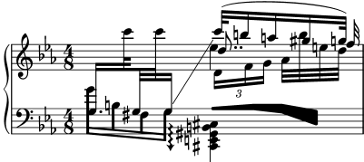

| [Top][Contents][Index] |
LilyPond — Utilització
|
Aquest fitxer explica com executar els programes que es distribueixen amb el LilyPond versió 2.26.0. A més a més suggereix certes “bones pràctiques” per a una utilització eficient. |
| 1 Execució del LilyPond | Operació. | |
2 Actualització de fitxers amb convert-ly | Actualitzar els fitxers d’entrada. | |
3 Execució de lilypond-book | Integrar text i música. | |
| 4 Programes externs | Barrejar el LilyPond amb altres programes. | |
| 5 Suggeriments per escriure fitxers d’entrada | Bones pràctiques i depuració eficient d’errors. | |
Annexos | ||
|---|---|---|
| Appendix A GNU Free Documentation License | Llicència d’aquest document. | |
| Appendix B Índex | ||
|
Per a més informació sobre la forma en la qual aquest manual es relaciona amb la resta de la documentació, o per llegir aquest manual en altres formats, consulteu Manuals. Si us falta algun manual, trobareu tota la documentació a https://lilypond.org/. |
| [ << Top ] | [Top][Contents][Index] | [ Actualització de fitxers amb convert-ly >> ] |
| [ < Top ] | [ Up: Top ] | [ Utilització normal > ] |
1 Execució del LilyPond
Aquest capítol detalla els aspectes tècnics de l’execució del LilyPond.
| 1.1 Utilització normal | ||
| 1.2 Utilització des de la línia d’ordres | ||
| 1.3 Missatges d’error | ||
| 1.4 Errors comuns |
| [ << Execució del LilyPond ] | [Top][Contents][Index] | [ Actualització de fitxers amb convert-ly >> ] |
| [ < Execució del LilyPond ] | [ Up: Execució del LilyPond ] | [ Utilització des de la línia d’ordres > ] |
1.1 Utilització normal
Gairebé tots els usuaris executen el LilyPond per mitjà d’una interfície gràfica; consulteu Tutorial si encara no l’heu llegit.
| [ << Execució del LilyPond ] | [Top][Contents][Index] | [ Actualització de fitxers amb convert-ly >> ] |
| [ < Utilització normal ] | [ Up: Execució del LilyPond ] | [ Invocació del lilypond > ] |
1.2 Utilització des de la línia d’ordres
Aquesta secció conté informació addicional sobre l’ús del
LilyPond a la línia d’ordres. Aquesta forma pot ser preferible
per passar-li al programa algunes opcions addicionals. A més a
més, existeixen alguns programes complementaris ‘de suport’ (com
ara midi2ly) que sols estan disponibles a la línia d’ordres.
En parlar de la ‘línia d’ordres’, ens referim a la consola del sistema operatiu. Els usuaris del Windows possiblement estiguin més familiaritzats amb els termes ‘finestra del MS-DOS’ o ‘línia de comandes’; Els usuaris del MacOS X potser que estiguin més familiaritzats amb els termes ‘terminal’ o ‘consola’.
La descripció de l’ús d’aquesta part dels sistemes operatius excedeix l’àmbit d’aquest manual; us preguem que consulteu altres documents sobre aquest tema si no us resulta familiar la línia d’ordres.
Invocació del lilypond | ||
| Opcions bàsiques de la línia d’ordres per al LilyPond | ||
| Opcions avançades de la línia d’ordres per al LilyPond | ||
| Variables d’entorn | ||
| El LilyPond a una gàbia de chroot |
Invocació del lilypond
L’executable lilypond es pot cridar des d’una línia
d’ordres de la manera següent:
lilypond [opció]… fitxer…
Quan s’invoca amb un nom de fitxer sense extensió, es prova en
primer lloc amb la extensió .ly. Per llegir l’entrada des
de stdin, utilitzeu un guió (-) en substitució de fitxer.
Quan es processa archivo.ly, la sortida resultant són els fitxers fitxer.ps i fitxer.pdf. Es poden especificar diversos fitxers; cadascú d’ells es processarà de forma independent1.
Si fitxer.ly conté més d’un bloc \score, la resta de
les partitures s’obtindran com a sortida en fitxers numerats,
començant per fitxer-1.pdf. A més, el valor de
output-suffix (sufix de sortida) s’inserirà entre el nom
base i el número. Un fitxer de sortida que contingui
#(define output-suffix "violí")
\score { … }
#(define output-suffix "violoncel")
\score { … }
produirà com a sortida base-violí.pdf i base-violoncel-1.pdf.
Instruccions estàndard de la línia d’ordres
Si la vostra terminal (o finestra d’ordres) contempla les redireccions normals, potser us siguin d’utilitat les següents instruccions per redirigir la sortida de la consola d’un fitxer:
-
lilypond fitxer.ly 1>sortidaestandard.logper redirigir la sortida normal -
lilypond fitxer.ly 2>sortidaderror.logper redirigir els missatges d’error -
lilypond fitxer.ly &>tot.logper redirigir tota la sortida
Consulteu la documentació del vostre intèrpret d’ordres per veure si contempla aquestes opcions, o si la sintaxi és diferent. Observeu que són instruccions de l’intèrpret d’ordres i que no tenen res a veure amb el LilyPond.
Opcions bàsiques de la línia d’ordres per al LilyPond
Estan contemplades les opcions següents:
-d, --define-default=variable=valorVegeu Opcions avançades de la línia d’ordres per al LilyPond.
-e, --evaluate=expressióAvalua l’expressió del Scheme abans d’analitzar els fitxers .ly. Es poden passar diverses opcions -e, que s’avaluaran en seqüència.
L’expressió s’avaluarà al mòdul
guile-user, de manera que si voleu usar definicions dins d’expressió, heu d’utilitzarlilypond -e '(define-public a 42)'
a la línia d’ordres, i incloure
#(use-modules (guile-user))
al principi del fitxer .ly.
Nota: Els usuaris de Windows han d’utilitzar cometes dobles en comptes de cometes simples.
-f, --format=formatquins formats s’han d’escriure. Les opcions per a
formatsónps,pdf, ipng.Exemple:
lilypond -fpng fitxer.ly-h, --helpMostra un resum de les formes de utilització.
-H, --header=CAMPBolca un camp de capçalera al fitxer NOMBASE.CAMP
-i, --init=archivoEstablir el fitxer d’inici a fitxer (predeterminat: init.ly).
-I, --include=directoriAfegir el directori a la ruta de cerca de fitxers d’entrada.
Es poden escriure diverses opcions -I. La cerca s’inicia al primer directori definit, i si el fitxer que s’ha d’incloure no es troba, la cerca continua als directoris següents.
-j, --jail=usuari,grup,gàbia,directoriExecutar
lilyponda una gàbia de chroot.L’opció --jail (gàbia) proporciona una alternativa més flexible a l’opció -dsafe quan el procés de tipografia del LilyPond està disponible a un servidor web o quan el LilyPond executa instruccions enviades per fonts externes (vegeu Opcions avançades de la línia d’ordres per al LilyPond).
L’opció --jail funciona canviant l’arrel de
lilyponda gàbia just o abans de començar el procés de compilació en sí. Si es fa això es canvien l’usuari i el grup als que s’han donat a l’opció, i el directori actual es canvia a directori. Aquesta instal·lació garanteix que no és possible, al menys en teoria, escapar a la gàbia. Observeu que perquè funcioni --jail, s’ha d’executarlilypondcom root, cosa que normalment es pot fer d’una forma segura utilitzantsudo.La instal·lació d’una gàbia pot ser un assumpte relativament complex, atès que hem d’assegurar-nos que el LilyPond pot trobar dins de la pròpia gàbia tot el que necessita per poder compilar la font. Una típica configuració de gàbia de chroot consta dels següents elements:
- Preparació d’un sistema de fitxers separat
S’ha de crear un sistema de fitxers separat per al LilyPond, de forma que es pugui muntar amb opcions segures com
noexec,nodevinosuid. D’aquesta forma, és impossible executar programes o escriure directament a un dispositiu des del LilyPond. Si no voleu crear una partició separada, tan sols té que crear un fitxer d’una mida raonable i usar-lo per muntar un dispositiu loop. El sistema de fitxers separat garanteix també que el LilyPond mai no pugui escriure en un espai major del què se li permeti.- Preparar un usuari separat
Es pot usar un usuari i grup separats (diguem-ne
lily/lily) amb pocs privilegis per executar el LilyPond dins d’una gàbia. Hauria d’existir un sols directori amb permisos d’escriptura per a aquest usuari, i s’ha de passar el valor directori.- Preparació de la gàbia
El LilyPond necessita llegir alguns fitxers mentre s’executa, Tots aquests fitxers s’han de copiar dins de la gàbia, sota la mateixa ruta en la qual apareixen al sistema de fitxers real de root. Tot el contingut de la instal·lació del LilyPond (per exemple /usr/share/lilypond) s’ha de copiar.
Si sorgeixen problemes, la forma més senzilla de rastrejar-los és executar el LilyPond usant
strace, cosa que li permetrà determinar quins fitxers falten.- Execució del LilyPond
Dins d’una gàbia muntada amb
noexecés impossible executar cap programa extern. Per tant, el LilyPond s’ha d’executar amb un backend que no necessiti un programa extern. Com ja hem mencionat, s’ha d’executar amb privilegis del superusuari (que per suposat perdrà immediatament), possiblement usantsudo. També de CPU que el LilyPond pot usar (per exemple usantulimit -t), i, si el vostre sistema operatiu ho contempla, la mida de la memòria que es pot reservar. Vegeu també El LilyPond a una gàbia de chroot.
-l, --loglevel=NIVELLFixa el grau en el qual la sortida de consola és neta al nivell NIVELL. Els valors possibles són:
NONECap sortida en absolut, ni tan sols missatges d’error.
ERRORSols missatges d’error, cap advertiment o indicacions de progrés.
WARNAdvertiments i missatges d’error, no de progrés.
BASICMissatges de progrés bàsics (èxit), advertiment i errors.
PROGRESSTots els missatges de progrés, advertiments i errors.
INFO (predeterminat)Missatges de progrés, advertiments, errors i informació d’execució addicional.
DEBUGTots els missatges possibles, fins i tot la informació detallada de depuració.
-o, --output=FITXER o CARPETAEstableix el nom del fitxer de sortida predeterminat a FITXER o, si hi ha una carpeta amb aquest nom, dirigeix la sortida cap a CARPETA, agafant el nom de fitxer del document d’entrada. S’afegeix el sufix corresponent (per exemple,
.pdfper a PDF) als dos casos.--psGenerar PostScript.
--pngGenera imatges de les pàgines en format PNG. Això implica --ps. La resolució en PPP de la imatge es pot establir amb
-dresolution=110
--pdfGenera PDF. Implica --ps.
-v, --versionMostra la informació de la versió.
-V, --verboseSigues detallat: mostra les rutes completes de tots els fitxers que se llegeixen, i dóna informació cronomètrica.
-w, --warrantyMostra la garantia del GNU LilyPond (no ve amb CAP GARANTIA!).
Opcions avançades de la línia d’ordres per al LilyPond
-d[nom-de-opció]=[valor], --define-default=[nom-de-opció]=[valor]Estableix la funció del Scheme interna equivalent a valor.
-dbackend=svg
Si no es proporciona cap valor, s’usa el valor predeterminat Per desactivar una opció es pot anteposar
no-a la variable, per exemple:-dno-point-and-click
és el mateix que
-dpoint-and-click=#f
Estan contemplades les següents opcions junt als seus respectius valors predeterminats:
| Símbol | Valor | Explicació/Opcions |
anti-alias-factor (factor d’antiàlies) | 1 | Renderitza a una major resolució (utilitzant el factor
donat) i redueix l’escala del resultat per així evitar
‘escales’ a les imatges PNG. |
aux-files (fitxers auxiliars) | #t | Crea fitxeres .tex, .texi, .count al
‘back-end’ EPS. |
backend | ps | Selecciona un ‘rerefons’. Els fitxers (l’opció
predeterminada) inclouen els tipus tipogràfics de lletra TTF,
Type1 i OTF. No es fa cap subconjunt d’aquests tipus
de lletra. L’ús de conjunts de caràcters ‘orientals’ pot
produir fitxers molts grans. |
svg | Gràfics vectorials escalables. Crea un únic fitxer
SVG, sense tipus tipogràfics de lletra incrustats, per a
cada pàgina de sortida. Es recomana instal·lar el tipus de lletra
Century Schoolbook, que està inclòs a la instal·lació del
LilyPond, per a un renderitzat òptim. Sota l’UNIX, bastarà amb
que copieu aquests fitxers de tipus de lletra del directori del
Lilypond (normalment /usr/share/lilypond/VERSION/fonts/otf/)
al directori ~/.fonts/. La sortida SVG hauria de
ser compatible amb qualsevol editor o client de SVG. També hi ha
una opció svg-woff (vegeu més avall) per usar els fitxers
de tipus de lletra woff al ‘rerefons’ SVG. | |
clip-systems (retalla els sistemes de pentagrames) | #f | Genera framents d’imatge retallats d’una partitura. |
datadir (directori de dades) | Prefix dels fitxers de dades (sols lectura). | |
debug-skylines | #f | Depuració de les línies de horitzó. |
delete-intermediate-files | #t | Elimina els fitxers intermedis .ps inútils que es
creen durant la compilació. |
eps-box-padding | #f | Omple la vora esquerra de la capsa contenidora de l’EPS de sortida en la quantitat donada (en mm). |
gs-load-fonts | #f | Carrega els tipus tipogràfics de lletra a través del Ghostscript. |
gs-load-lily-fonts | #f | Carrega sols els tipus de lletra del LilyPond per mitjà del Ghostscript. |
help | #f | Mostra aquesta ajuda |
include-book-title-preview | #t | Inclou els títols de llibre a les imatges de vista prèvia. |
include-eps-fonts | #t | Incloure els tipus tipogràfics de fonts als fitxers EPS de cadascú dels sistemes. |
include-settings | #f | Inclou el fitxer dels ajustos globals, s’inclou abans que la partitura es processi. |
job-count | #f | Processa en paral·lel, usant el nombre de tasques donat. |
log-file | #f [fitxer] | Si es dóna a una cadena fitxer como a segon argument,
redirigeix la sortida al fitxer de registre fitxer.log. |
max-markup-depth | 1024 | Profunditat màxima de l’arbre de l’etiquetatge. Si un etiquetatge té més nivells, suposa que no acabarà per sí mateix, imprimint un advertiment i retornant en el seu lloc un element d’etiquetatge nul. |
midi-extension | "midi" | Fixa l’extensió de fitxer predeterminat per al fitxer de sortida MIDI a la cadena donada. |
music-strings-to-paths | #f | Converteix les cadenes de text a rutes quan els glifs pertanyen a un tipus de lletra de tipografia musical. |
paper-size | \"a4\" | Estableix la mida predeterminada del paper. Observeu que la cadena ha d’anar tancada entre cometes dobles. |
pixmap-format | png16m | Fixa el format de sortida del Ghostsript per a les imatges de píxels. |
point-and-click | #f | Afegeix enllaços d’‘apuntar i
clicar’ a la sortida PDF. Vegeu
Apunteu i feu clic. |
preview | #f | Crea imatges de vista prèvia a més de la sortida normal. |
Aquesta opció està contemplada per tots els ‘rerefons’: pdf,
png, ps, eps i svg, però no per
scm. Genera un fitxer de sortida, en la forma
elmeuFitxer.preview.extensió, que conté els títols i el
primer sistema de la música. Si s’estan utilitzant blocs
\book o \bookpart, apareixen a la sortida els títols de
\book, \bookpart o \score, inclòs el primer
sistema de cada bloc \score si la variable de \paper
print-all-headers està fixada al valor #t.
Per suprimir la sortida actual, utilitzeu les opcions -dprint-pages o -dno-print-pages segons les vostres necessitats.
print-pages | #t | Genera pàgines completes (és l’opció predeterminada). És útil -dno-print-pages en combinació amb -dpreview. |
protected-scheme-parsing | #t | Continua quan es capten a l’analitzador sintàctic errors del
Scheme encastat. Si es fixa a #f, detenir-se quan hi hagi
errors i imprimir un registre de traça de pila. |
relative-includes | #f | Quan es processa una instrucció \include, cerca el
fitxer inclòs de forma relativa al fitxer actual (enlloc del
fitxer principal). |
resolution | 101 | Fixa la resolució per generar imatges de píxels PNG al
valor donat (en ppp). |
safe | #f | No confiïs en l’entrada .ly. |
Quan el servei de tipografia està disponible a través d’un servidor web, S’HAN DE passar les opcions --safe o --jail. L’opció --safe evita que el codi del Scheme faci un desastre, per exemple:
#(system "rm -rf /")
{
c4^$(ly:gulp-file "/etc/passwd")
}
L’opció -dsafe funciona avaluant les expressions del Scheme en línia dins d’un mòdul segur especial. Deriva del mòdul safe-r5rs del Guile, però a més afegeix unes quantes funcions de l’API del LilyPond que estan relacionades en scm/safe-lily.scm.
A més, el mode segur prohibeix les directives \include i
desactiva la utilització de barres invertides a les cadene de
TeX. A més, no és possible importar variables del LilyPond
dins del Scheme quan s’està em mode segur.
-dsafe no detecta la sobreutilitizació de recursos, per la qual cosa encara és possible fer que el programa es pengi indefinidament, per exemple subministrant estructures de dades cícliques en el rerefons. Per això, si esteu usant el LilyPond en un servidor web accessible públicament, el procés s’ha de limitar tant en l’ús de memòria com de CPU.
El mode segur evita que es puguin compilar molts fragments de codi útils.
L’opció --jail és una alternativa encara més segura, però requereix més feina per a la seva configuració. Vegeu Opcions bàsiques de la línia d’ordres per al LilyPond.
separate-log-files | #f | Per als fitxers d’entrada FITXER1.ly,
FITXER2.ly, etc., treu les dades de registre cap als
fitxers FITXER1.log, FITXER2.log… |
show-available-fonts | #f | Llista tots els noms dels tipus tipogràfics de lletra disponibles. |
strip-output-dir | #t | No usis els directoris dels fitxers d’entrada en construir els noms dels fitxers de sortida. |
strokeadjust | #f | Força l’ajust dels traços de PostScript. Aquesta opció és
rellevant principalment quan es genera un PDF a partir de
la sortida de PostScript (l’ajust del traç està en general activat
automàticament per a dispositius de mapa de punts de baixa
resolució). Sense aquesta opció, els visors de PDF
tendeixen a produir amplades de plica molt poc consistents a les
resolucions típiques de les pantalles d’ordinador. L’opció no
afecta de forma molt significativa a la qualitat de la impressió i
causa grans increments a la mida del fitxer PDF. |
svg-woff | #f | Usar fitxers de tipus tipogràfic de lletra de woff al rerefons SVG. |
verbose | #f | Sortida detallada, és a dir el nivell de registre en DEBUT (sols lectura). |
warning-as-error | #f | Canvia tots els missatges d’advertiment i de ‘error de programació’ a errors. |
Variables d’entorn
lilypond reconeix les següents variables d’entorn:
LILYPOND_DATADIREspecifica un directori en el qual els missatges de localització i de dades es buscaran de forma predeterminada. El directori ha de contenir subdirectoris anomenats ly/, ps/, tex/, etc.
LANGSelecciona l’idioma dels missatges d’advertiment.
LILYPOND_LOGLEVELNivell de registre predeterminat. Si el LilyPond es crida sense cap nivell de registre explícit (és a dir, sense opció de línia d’ordres --loglevel), s’usa aquest valor.
LILYPOND_GC_YIELDUna variable, com a percentatge, que ajusta el comportament de l’administració de memòria. Amb valors més alts, el programa usa més memòria; amb valors més baixos, usa més temps de CPU. El valor predeterminat és
70.
| [ << Execució del LilyPond ] | [Top][Contents][Index] | [ Actualització de fitxers amb convert-ly >> ] |
| [ < Variables d’entorn ] | [ Up: Utilització des de la línia d’ordres ] | [ Missatges d’error > ] |
El LilyPond a una gàbia de chroot
La preparació del servidor perquè executi el LilyPond a una gàbia
de chroot és una tasca molt complicada. Els passos estan
relacionats més avall. Els exemples que apareixen en cadascú dels
passos son vàlids per a Ubuntu GNU/Linux, i poden requerir l’ús de
sudo segons correspongui.
- Instal·leu els paquets necessaris: el LilyPond, el Ghostscript i l’ImageMagick.
- Creeu un usuari nou amb el nom de
lily:adduser lily
Això també crearà un nou grup per a l’usuari
lily, i una carpeta personal,/home/lily - A la carpeta personal de l’usuari
lily, creeu un fitxer per usar-lo com a sistema de fitxers separat:dd if=/dev/zero of=/home/lily/loopfile bs=1k count= 200000
Aquest exemple crea un fitxer de 200MB per al seu ús com el sistema de fitxers de la gàbia.
- Creeu un dispositiu loop, feu un sistema de fitxers i munteu-lo,
després creeu una carpeta que es pugui escriure per l’usuari
lily:mkdir /mnt/lilyloop losetup /dev/loop0 /home/lily/loopfile mkfs -t ext3 /dev/loop0 200000 mount -t ext3 /dev/loop0 /mnt/lilyloop mkdir /mnt/lilyloop/lilyhome chown lily /mnt/lilyloop/lilyhome
- En la configuració dels servidors, JAIL serà
/mnt/lilyloopi DIR serà/lilyhome. - Creeu un gran arbre de directoris dins de la gàbia copiant els
fitxers necessaris, com es mostra en el guió d’exemple que apareix
més avall.
Podeu usar
sedper crear els fitxeres de còpia necessaris per a un executable donat:for i in "/usr/local/lilypond/usr/bin/lilypond" "/bin/sh" "/usr/bin/; \ do ldd $i | sed 's/.*=> \/\(.*\/\)\([^(]*\).*/mkdir -p \1 \&\& \ cp -L \/\1\2 \1\2/' | sed 's/\t\/\(.*\/\)\(.*\) (.*)$/mkdir -p \ \1 \&\& cp -L \/\1\2 \1\2/' | sed '/.*=>.*/d'; done
Guió d’exemple per a l’Ubuntu 8.04 de 32 bits
#!/bin/sh
## aquí es fixen els valors predeterminats
username=lily
home=/home
loopdevice=/dev/loop0
jaildir=/mnt/lilyloop
# prefix (sense la barra inicial!)
lilyprefix=usr/local
# el directori en el qual el LilyPond es troba instal·lat en el sistema
lilydir=/$lilyprefix/lilypond/
userhome=$home/$username
loopfile=$userhome/loopfile
adduser $username
dd if=/dev/zero of=$loopfile bs=1k count=200000
mkdir $jaildir
losetup $loopdevice $loopfile
mkfs -t ext3 $loopdevice 200000
mount -t ext3 $loopdevice $jaildir
mkdir $jaildir/lilyhome
chown $username $jaildir/lilyhome
cd $jaildir
mkdir -p bin usr/bin usr/share usr/lib usr/share/fonts $lilyprefix tmp
chmod a+w tmp
cp -r -L $lilydir $lilyprefix
cp -L /bin/sh /bin/rm bin
cp -L /usr/bin/convert /usr/bin/gs usr/bin
cp -L /usr/share/fonts/truetype usr/share/fonts
# Ara la màgia de copiar les biblioteques
for i in "$lilydir/usr/bin/lilypond" "$lilydir/usr/bin/guile" "/bin/sh" \
"/bin/rm" "/usr/bin/gs" "/usr/bin/convert"; do ldd $i | sed 's/.*=> \
\/\(.*\/\)\([^(]*\).*/mkdir -p \1 \&\& cp -L \/\1\2 \1\2/' | sed \
's/\t\/\(.*\/\)\(.*\) (.*)$/mkdir -p \1 \&\& cp -L \/\1\2 \1\2/' \
| sed '/.*=>.*/d'; done | sh -s
# Els fitxers compartits per al ghostcript...
cp -L -r /usr/share/ghostscript usr/share
# Els fitxers compartits per a l'ImageMagick
cp -L -r /usr/lib/ImageMagick* usr/lib
### Ara, suposant que tenim test.ly a /mnt/lilyloop/lilyhome,
### hauríem de poder executar:
### Observeu que /$lilyprefix/bin/lilypond és un guió, que estableix
### un valor per a LD_LIBRARY_PATH : això és crucial
/$lilyprefix/bin/lilypond -jlily,lily,/mnt/lilyloop,/lilyhome test.ly
| [ << Execució del LilyPond ] | [Top][Contents][Index] | [ Actualització de fitxers amb convert-ly >> ] |
| [ < El LilyPond a una gàbia de chroot ] | [ Up: Execució del LilyPond ] | [ Errors comuns > ] |
1.3 Missatges d’error
Poden aparèixer diferents missatges d’error en compilar un fitxer:
- Advertiment ¶
Alguna cosa té un aspecte sospitós. Si estem demanant quelcom fora del comú, entendrem el missatge i podrem ignorar-lo. Tot i així, els advertiments solen indicar que alguna cosa va mal amb el fitxer d’entrada.
- Error ¶
És clar que alguna cosa va malament. El pas actual del processament (anàlisi, interpretació o format visual) es donarà per acabat, però el pas següent se saltarà.
- Error fatal ¶
-
És clar que alguna cosa va malament, i el LilyPond no pot continuar. Poques vegades passa això. La causa més freqüent són els tipus de lletra mal instal·lats.
- Error del Scheme ¶
-
Els errors que ocorren en executar el codi del Scheme s’intercepten per part de l’intèrpret del Scheme. Si s’està executant amb les opcions -V o --verbose (detallat) aleshores s’imprimeix una traça de crides de la funció ofensiva.
- Error de programació ¶
-
Hi ha hagut algun tipus d’inconsistència interna. Aquests missatges d’error estan orientats a ajudar als programadors i als depuradors. Normalment es poden ignorar. En ocasions apareixen en quantitats tan grans que poden entorpir la visió d’altres missatges de sortida.
- Abort (bolcat de core)
Això senyala un error de programació seriós que ha causat la interrupció abrupta del programa. Aquests errors es consideren crítics. Si es topa amb un, envieu un informe de fallada.
Si els errors i advertiments es poden lligar a un punt del fitxer d’entrada, els missatges tenen la forma següent:
fitxer:línia:columna: missatge línia d'entrada problemàtica
S’insereix un salt de línia a la línia problemàtica per indicar la columna on es va trobar l’error. Per exemple,
prova.ly:2:19: error: no és una duració: 5
{ c'4 e'
5 g' }
Aquestes posicions són la millor suposició del LilyPond sobre on s’ha produït el missatge d’error, però (per la seva pròpia naturalesa) els advertiment i errors es produeixen quan passa quelcom inesperat. Si no veieu un error a la línia que s’indica del fitxer d’entrada, intenteu comprovar una o dues línies per sobre de la posició indicada.
S’ofereix més informació sobre els errors a la secció Errors comuns.
| [ << Execució del LilyPond ] | [Top][Contents][Index] | [ Actualització de fitxers amb convert-ly >> ] |
| [ < Missatges d’error ] | [ Up: Execució del LilyPond ] | [ La música se surt de la pàgina > ] |
1.4 Errors comuns
Les condicions d’error que es descriuen més a sota es produeixen amb freqüència, tot i que la causa no és òbvia o fàcil de trobar. Un cop se han vist i comprès, es gestionen sense problema.
| [ << Execució del LilyPond ] | [Top][Contents][Index] | [ Actualització de fitxers amb convert-ly >> ] |
| [ < Errors comuns ] | [ Up: Errors comuns ] | [ Apareix un pentagrama de més > ] |
La música se surt de la pàgina
La música que se surt de la pàgina pel marge dret o que apareix exageradament comprimida està causada gairebé sempre per haver introduït una duració incorrecta per a una nota, produint que la nota final d’un compàs s’estengui més enllà de la línia divisòria. Això no és invàlid si la nota final d’un compàs no acaba sobre la línia divisòria introduïda automàticament, atès que simplement se suposa que la nota se solapa a sobre del compàs següent. Però si es produeix una seqüència llarga d’aquestes notes solapades, la música pot aparèixer comprimida o sortir-se de la pàgina perquè els salts de línia automàtiques solament se poden inserir al final dels compassos complets, és a dir, els compassos en els quals totes les notes acaben abans o just al final del compàs.
Nota: Una duració incorrecta pot fer que s’inhibeixin els salts de línia, el que portaria a una sola línia de música molt comprimida o que se surti de la pàgina.
La duració incorrecta es pot trobar fàcilment si s’utilitzen comprovacions de compàs, vegeu Comprovació de compàs i de número de compàs.
Si realment volem tenir una sèrie d’aquests compassos amb notes solapades, hem d’inserir una línia divisòria invisible on volem el salt de línia. Per veure més detalls, consulteu Barres de compàs.
| [ << Execució del LilyPond ] | [Top][Contents][Index] | [ Actualització de fitxers amb convert-ly >> ] |
| [ < La música se surt de la pàgina ] | [ Up: Errors comuns ] | [ Missatge d’error Unbound variable % > ] |
Apareix un pentagrama de més
Si no es creen els contextos explícitament amb \new o amb
\context, es crearan discretament tan aviat com es trobi
una instrucció que no es pot aplicar a un context existent. A
partitures senzilles, la creació automàtica dels contextos és
útil, i gairebé tots els exemples dels manuals del LilyPond
s’aprofiten d’aquesta simplificació. Però ocasionalment la
creació discreta de contextos pot fer aflorar pentagrames o
partitures nous o inesperats. Per exemple, podria esperar-se que
el codi següent fet que totes les notes dins del pentagrama
següent estiguessin acolorides de vermell, però de fet el
resultat són dos pentagrames, romanent el de sota amb les
notes amb el color negre predeterminat.
\override Staff.NoteHead.color = #red \new Staff { a' }
Això és així perquè no hi ha cap context Staff quan es
processa la instrucció override de sobreescriptura, es crea un
implícitament i la sobreescriptura s’aplica a aquest context, però
aleshores la instrucció \new Staff crea un pentagrama nou i
diferent, en el qual es col·loquen les notes. El codi correcte
per acolorir totes les notes de vermell és
\new Staff { \override Staff.NoteHead.color = #red a' }
Com a segon exemple, si una instrucció \relative s’escriu
dins d’una instrucció \repeat, el resultat són dos
pentagrames, el segon desplaçat respecte al primer, perquè la
instrucció \repeat genera dos blocs \relative, cada
un dels quals crea implícitament blocs Staff i Voice.
\repeat unfold 2 { \relative { c'4 d e f } }
El problema es resol instanciant el context Voice
explícitament:
\new Voice { \repeat unfold 2 { \relative { c'4 d e f } } }![[image of music]](71/lily-c252e07c.png)
| [ << Execució del LilyPond ] | [Top][Contents][Index] | [ Actualització de fitxers amb convert-ly >> ] |
| [ < Apareix un pentagrama de més ] | [ Up: Errors comuns ] | [ Missatge d’error FT_Get_Glyph_Name > ] |
Missatge d’error Unbound variable %
Aquest missatge d’error apareix al final dels missatges de la consola o del fitxer de registre junt a un missatge “Guile ha senyalat un error …” cada cop que es cridi a una rutina del Scheme que (incorrectament) contingui un comentari del LilyPond enlloc d’un comentari del Scheme.
Els comentaris del LilyPond comencen amb un símbol de
percentatge, (%), i no s’han d’utilitzar dins de les
rutines del Scheme. Els comentaris del Scheme comencen amb punt i
coma, (;).
Missatge d’error FT_Get_Glyph_Name
Aquest missatge d’error apareix a la sortida de la consola o al fitxer log de registre si un fitxer d’entrada conté un caràcter que no és ASCII i no s’ha desat en la codificació de caràcters UTF-8. Per veure més detalls, consulteu Codificació del text.
Advertiment sobre que les afinitats del pentagrama sols han de decrèixer
Aquest advertiment pot aparèixer si no hi ha cap pentagrama a la
sortida impresa, per exemple si sols hi ha un context
ChordName i un context Lyrics com a un full guia
d’acords. Els missatges d’advertiment es poden evitar fent que un
dels contextos es comporti com un pentagrama, inserint
\override VerticalAxisGroup.staff-affinity = ##f
al començament. Per veure més detalls, consulteu “Espaiat de les línies que no són pautes” a Espaiat vertical flexible dins dels sistemes.
Missatge d’error Unexpected new \new
Un bloc \score ha de contenir una única expressió
musical. Si en comptes d’això conté diverses instruccions
\new Staff, \new StaffGroup o contextos semblants
introduïts amb \new sense que s’hagin tancat entre
claus, { … }, o dobles parèntesis en
angle, << … >>, així:
\score {
% Invàlid! Genera error: error de sintaxi, \new inesperat
\new Staff { … }
\new Staff { … }
}
aleshores es produirà un missatge d’error.
Per evitar l’error, tanqueu totes les instruccions \new
dins de les claus o dobles parèntesis d’angle.
L’ús de claus introdueix les instruccions \new
de forma seqüencial:
\score { { \new Staff { a' a' a' a' } \new Staff { g' g' g' g' } } }
però és més probable que us trobeu utilitzant angles dobles de manera que els pentagrames nous s’insereixin en paral·lel, és a dir, simultàniament:
\score { << \new Staff { a' a' a' a' } \new Staff { g' g' g' g' } >> }
| [ << Execució del LilyPond ] | [Top][Contents][Index] | [ Execució de lilypond-book >> ] |
[ < Missatge d’error Unexpected new \new ] | [ Up: Top ] | [ Perquè canvia la sintaxi? > ] |
2 Actualització de fitxers amb convert-ly
La sintaxi del llenguatge d’entrada del LilyPond es modifica de
forma habitual per a simplificar-la o millorar-la de diferents
maneres. Com a efecte secundari, l’intèrpret del LilyPond sovint
ja no és compatible amb els fitxers d’entrada antics. Per posar
remei a això es pot utilitzar el programa convert-ly per
actualitzar fitxers a versions més noves del LilyPond.
| 2.1 Perquè canvia la sintaxi? | ||
2.2 Invocació de convert-ly | ||
2.3 Opcions de la línia d’ordres per a convert-ly | ||
2.4 Problemes amb convert-ly | ||
| 2.5 Conversions manuals |
2.1 Perquè canvia la sintaxi?
La sintaxi de l’entrada del LilyPond canvia de manera ocasional. A mesura que el propi LilyPond millora, la sintaxi (el llenguatge de l’entrada) es modifica en consonància. A vegades aquests canvis es fan per aconseguir que l’entrada sigui més fàcil de llegir i escriure, i d’altres vegades aquests canvis són per donar cabuda a noves funcionalitats del LilyPond.
Per exemple, se suposa que tots els noms de les propietats de
\paper i de \layout estan escrits sota la norma
primer-segon-tercer. Tot i així, a la versió 2.11.60,
observem que la propietat printallheaders no seguia aquesta
convenció. Hauríem de deixar-la tal com està (confonent als nous
usuaris que han de tractar amb un format d’entrada inconsistent),
o canviar-la (empipant als usuaris amb experiència que tenen
partitures antigues)? En aquest cas, vam decidir canviar el nom a
print-all-headers. Afortunadament, aquest
canvi es pot automatitzar amb la nostra eina
convert-ly.
Tanmateix, lamentablement convert-ly no pot tractar tots
els canvis d’entrada. Per exemple, a la versió 2.4 i anteriors de
LilyPond els accents i les lletres no angleses s’introdueixen
utilitzant el LaTeX: per exemple No\"el (que significa
‘Nadal’ en francès). Al LilyPond 2.6 i següents el caràcter
especial ë s’ha d’introduir directament al fitxer del
LilyPond com un caràcter UTF-8. convert-ly no pot
canviar tots els caràcters especials del LaTeX a caràcters de
UTF-8: haureu d’actualitzar manualment els vostres fitxers del
LilyPond antics.
Les regles de conversió de convert-ly funcionen usant
correspondència i substitució de patrons de text enlloc d’una
comprensió profunda de la sintaxi del LilyPond. Això té diverses
conseqüències:
- El bon funcionament de la conversió depèn de la qualitat de cada conjunt de regles que s’apliquen i de la complexitat del canvi corresponent. A vegades les conversions poden necessitar correccions manuals, per la qual cosa la versió antiga hauria de conservar-se a efectes de comparació.
- Solament són possibles les conversions de formats més nous: no hi ha cap conjunt de regles per a la desactualització. Així doncs, la còpia principal de treball d’un fitxer del LilyPond solament s’ha d’actualitzar quan ja no hi ha necessitat de seguir mantenint versions antigues del LilyPond. Els sistemes de control de versions com ara el Git poden ser de gran ajuda per realitzar el manteniment de diverses versions dels mateixos fitxers.
- Els propis programes del LilyPond i de l’Scheme són força robustos
enfront als espais afegits i suprimits de manera “creativa”,
però les regles utilitzades per
convert-lytendeixen a fer certes suposicions d’estil. El millor que pot fer-se és seguir l’estil que s’usa als manuals per fer actualitzacions indolores, especialment perquè els propis manuals s’actualitzen usantconvert-ly.
2.2 Invocació de convert-ly
convert-ly utilitza el enunciats \version dels
fitxers d’entrada per detectar el número de versió antic. En
gairebé tots els casos, per actualitzar el fitxer d’entrada sols
cal executar
convert-ly -e elmeufitxer.ly
dins del directori que conté el fitxer. Amb això s’actualitza elmeufitxer.ly in situ i es preserva el fitxer original elmeufitxer.ly~.
Nota: convert-ly sempre converteix fins l’últim canvi
de sintaxi que és capaç de gestionar. Això significa que el
número de \version que apareix al fitxer convertit sol ser
inferior al número de versió del propi programa
convert-ly.
Per convertir d’un cop tots els fitxers d’entrada que hi ha a un directori, useu
convert-ly -e *.ly
De forma alternativa, si volem especificar un nom diferent per al fitxer actualitzar, preservant el fitxer original amb el mateix nom, feu
convert-ly elmeufitxer.ly > elmeunoufitxer.ly
El programa imprimeix una relació dels números de versió per als que s’han fet conversions. Si no s’imprimeix cap número de versió, el fitxer ja està actualitzat.
Els usuaris del MacOS X poden executar aquesta instrucció sota
el menú Compilar > Actualitzar sintaxi.
Els usuaris del Windows han d’introduir aquesta instrucció a una
nova ventana del terminal del sistema, que es troba en general sota
Inici > Accessoris > Símbol del sistema.
2.3 Opcions de la línia d’ordres per a convert-ly
En general, el programa s’invoca de la manera següent:
convert-ly [opció]… fitxer…
Es poden donar les opcions següents:
-d, --diff-version-updateIncrementa la cadena
\versionsolament si el fitxer efectivament ha canviat. En tal cas, la capçalera de versió correspondrà a la versió següent a l’últim canvi efectiu. Sense aquesta opció la versió reflecteix l’última conversió que es va intentar fer.-e, --editAplica les conversions directament al fitxer d’entrada, modificant-lo in situ. El fitxer original es canvia de nom a elmeufitxer.ly~. Aquest fitxer de còpia de seguretat podria ser un fitxer ocult en alguns sistemes operatius.
-b, --backup-numberedQuan s’usa amb l’opció ‘-e’, numera els fitxers de còpia de seguretat de forma que no se sobreescrigui cap versió anterior. Els fitxers de còpia de seguretat podrien ser fitxer ocults en alguns sistemes operatius.
-f, --from=versió_d_origenEstableix la versió des de la qual s’ha de convertir. Si no apareix aquesta opció
convert-lyintentarà endevinar-la, bastant-se en la instrucció\versiondel fitxer. Exemple: --from=2.10.25-h, --helpImprimeix l’ajuda d’utilització.
-l nivellderegistre, --loglevel=nivellderegistreFixa el grau en el qual la sortida és detallada a nivellderegistre. Els valors possibles són
NONE(cap),ERROR(errors),WARN(advertiments),PROGRESS(avenç;predeterminat) iDEBUG(depuració).-n, --no-versionNormalment
convert-lyafegeix un indicador\versiona la sortida. L’especificació d’aquesta opció el suprimeix.-s, --show-rulesMostra totes les conversions conegudes i surt.
-t, --to=versió_finalFixa explícitament a quina
\versionconvertir, en cas contrari el valor predeterminat és la versió més actual. Ha de ser més alta que la versió de partida.convert-ly --to=2.14.1 elmeufitxer.ly
Per actualitzar fragments del LilyPond en fitxer de texinfo, useu
convert-ly --from=… --to=… --no-version *.itely
Per veure els canvis en la sintaxi del LilyPond entre dues versions donades, useu
convert-ly --from=… --to=… -s
2.4 Problemes amb convert-ly
En executar convert-ly a una finestra del Símbol de Sistema sota el Windows sobre un fitxer que té espais al nom o la ruta, és necessari tancar tot el nom del fitxer d’entrada amb tres (!) parelles de cometes:
convert-ly """D:/Les meves partitures/Oda.ly""" > "D:/Les meves partitures/nova Oda.ly"
Si l’ordre simple convert-ly -e *.ly no funciona perquè
la instrucció expandida es fa massa llarga, en comptes de fer això
l’ordre convert-ly es pot posar dins d’un bucle. Aquest
exemple per a UNIX actualitza tots els documents .ly del
directori actual
for f in *.ly; do convert-ly -e $f; done;
A la finestra del terminal d’ordres del Windows, la instrucció corresponent és
for %x in (*.ly) do convert-ly -e """%x"""
No es gestionen tots els canvis al llenguatge. Sols es pot especificar una opció de sortida. L’actualització automàtica del Scheme i les interfícies Scheme del LilyPond és força improbable; prepareu-vos per manipular el codi del Scheme a mà.
2.5 Conversions manuals
En teoria, un programa com convert-ly hauria de poder
tractar qualsevol canvi de sintaxi. Després de tot, un programa
d’ordinador interpreta les versions antiga i nova, per la qual
cosa un altre programa d’ordinador podria traduir un fitxer a
l’altre2.
Tot i així, el projecte LilyPond compta amb uns recursos limitats: no totes les conversions s’efectuen automàticament. A continuació hi ha una llista de problemes coneguts.
1.6->2.0:
No sempre converteix el baix xifrat correctament, específicament
coses com ara {<
>}. El comentari de Mats sobre com solucionar el
problema:
Per poder executar convert-ly
sobre ell, primer vaig sustituir totes les aparicions de '{<' a quelcom mut com ara '{#'
i de forma semblant vaig sustituir '>}' amb '&}'. Després de la conversió, vaig poder
tornar a canviar-los de '{ #' a '{ <' i de '& }' a '> }'.
No converteix tot l'etiquetatge de text correctament. En sintaxi antiga,
es podien agrupar diverses etiquetes entre parèntesis, per exemple
-#'((bold italic) "cadena")
Això es converteix incorrectament a
-\markup{{\bold italic} "cadena"}
en comptes del correcte
-\markup{\bold \italic "cadena"}
2.0->2.2:
No gestiona \partCombine
No va \addlyrics => \lyricsto, això trenca algunes partitures amb diverses estrofes
2.0->2.4:
\magnify no es canvia per \fontsize.
- \magnify #m => \fontsize #f, on f = 6ln(m)/ln(2)
remove-tag no es canvia.
- \applyMusic #(remove-tag '. . .) => \keepWithTag #'. . .
first-page-number no es canvia.
- first-page-number no => print-first-page-number = ##f
Els salts de línia a les cadenes de capçalera no es converteixen.
- \\\\ com salt de línia a les cadenes de \header => \markup \center-align <
"Primera línia" "Segona línia" >
Els terminadors de crescendo i descrecendo no es converteixen.
- \rced => \!
- \rc => \!
2.2->2.4:
\turnOff (usat a \set Staff.VoltaBracket = \turnOff) no es converteix
adequadament.
2.4.2->2.5.9
\markup{ \center-align <{ ... }> } s'hauria de convertir a:
\markup{ \center-align {\line { ... }} }
però ara, falta el \line.
2.4->2.6
Els caràcters especials del LaTeX com $~$ al text no es converteixen a UTF8.
2.8
\score{} ara ha de començar amb una expressió musical. Qualsevol alta cosa
(en particular, \header{}) ha d'anar després de la música.
[ << Actualització de fitxers amb convert-ly ] | [Top][Contents][Index] | [ Programes externs >> ] |
| [ < Conversions manuals ] | [ Up: Top ] | [ Un exemple de document musicològic > ] |
3 Execució de lilypond-book
Si voleu afegir imatges de música a un document, ho podeu fer simplement de la mateixa manera que ho faríeu amb altres tipus d’imatges. Les imatges es creen per separat, donant com a resultat una sortida PostScript o imatges PNG, i després s’inclouen al document de LaTeX o de HTML.
lilypond-book ofereix una manera d’automatitzar aquest
procés: aquest programa extrau els fragments de música del
document, executa lilypond sobre cadascú d’ells, i
retorna com a sortida el document amb la música substituïda per
les imatges. Les definicions d’amplada de línia i mida de la
lletra de la música s’ajusten de forma que coincideixin amb la
configuració del vostre document.
És un programa diferent a lilypond pròpiament dit, i
s’executa sobre la línia d’ordre; per veure més informació,
consulteu Utilització des de la línia d’ordres.
Aquest procediment es pot aplicar a documents de LaTeX, HTML, Texinfo o DocBook.
[ << Execució de lilypond-book ] | [Top][Contents][Index] | [ Programes externs >> ] |
[ < Execució de lilypond-book ] | [ Up: Execució de lilypond-book ] | [ Integració de música i text > ] |
3.1 Un exemple de document musicològic
Certs texts contenen exemples musicals. Per exemple els tractats
musicals, cançoners o manuals com aquest mateix. Aquests textos es
poden fer a mà, important simplement una imatge en format PostScript a
l’editor de textos. Malgrat això, hi ha un procediment automàtic per
reduir la càrrega de treball que això implica amb documents HTML,
LaTeX, Texinfo i DocBook.
Un guió executable anomenat lilypond-book extrau els fragments de
música, els dóna format i torna a posar en el seu lloc la partitura
resultant. A continuació presentem un petit exemple de la seva
utilització amb LaTeX. L’exemple conté també text explicatiu, per la
qual cosa no el comentarem posteriorment.
Entrada
\documentclass[a4paper]{article}
\begin{document}
Els document per a \verb+lilypond-book+ poden barrejar lliurement música
i text. Per exemple:
\begin{lilypond}
\relative {
c'2 e2 \tuplet 3/2 { f8 a b } a2 e4
}
\end{lilypond}
Les opcions s'escriuen entre claus.
\begin{lilypond}[fragment,quote,staffsize=26,verbatim]
c'4 f16
\end{lilypond}
Els exemples grans es poden gravar en fitxers separats i incloure'ls amb
\verb+\lilypondfile+.
\lilypondfile[quote,noindent]{screech-and-boink.ly}
(Si cal, substituïu @file{screech-and-boink.ly} per qualsevol fitxer
@file{.ly} ubicat al mateix directori que aquest fitxer.)
\end{document}
Processat
Deseu el codi anterior a un fitxer anomenat lilybook.lytex, i després executeu a una terminal:
lilypond-book --output=out --pdf lilybook.lytex
lilypond-book (GNU LilyPond) 2.26.0
Llegint lilybook.lytex...
…molts missatges suprimits…
Compilant lilybook.tex…
cd out
pdflatex lilybook
…molts missatges suprimits…
xpdf lilybook
(substituïu xpdf pel vostre visualitzador favorit de PDF)
L’execució de lilypond-book i latex crea un gran
nombre de fitxers temporals, que podrien omplir el directori de
treball. Per solucionar això, utilitzeu l’opció
--output=directori. Crearà els fitxers a un subdirectori
a part directori.
Finalment el resultat de l’exemple de LaTeX que acabem de mostrar3. Així acaba la secció del tutorial.
Sortida
Els documents per lilypond-book poden barrejar lliurement
música i text. Per exemple:
Les opcions s’escriuen entre claus.
c'4 f16
Els exempes grans es poden gravar en fitxers separats i introduir-se amb
\lilypondfile.

Si es requereix un camp tagline, ja sigui predeterminat o
personalitzat, aleshores el fragment complet s’ha d’incloure dins d’una
construcció \book { }.
\book{ \header{ title = "Una escala al LilyPond" } \relative { c' d e f g a b c } }
[ << Execució de lilypond-book ] | [Top][Contents][Index] | [ Programes externs >> ] |
| [ < Un exemple de document musicològic ] | [ Up: Execució de lilypond-book ] | [ LaTeX > ] |
3.2 Integració de música i text
Aquí explicarem com integrar el LilyPond amb alguns altres formats de sortida.
| 3.2.1 LaTeX | ||
| 3.2.2 Texinfo | ||
| 3.2.3 HTML | ||
| 3.2.4 DocBook |
[ << Execució de lilypond-book ] | [Top][Contents][Index] | [ Programes externs >> ] |
| [ < Integració de música i text ] | [ Up: Integració de música i text ] | [ Texinfo > ] |
3.2.1 LaTeX
El LaTeX és l’estàndard de facto per a la publicació al món de les ciències exactes. Està construït a sobre del motor de composició tipogràfica TeX, proporcionant el format tipogràfica de la millor qualitat que existeix.
Consulteu The Not So Short Introduction to LaTeX (Introducció no tan breu al LaTeX) per veure una panoràmica de l’ús del LaTeX.
lilypond-book aporta les ordres i els enrons per incloure música
dins de fitxers del LaTeX:
- l’ordre
\lilypond{…}, on podem escriure directament fragments curs de codi del LilyPond - l’entorn
\begin{lilypond}…\end{lilypond}, on podem introduir directament blocs més llargs de codi del Lilypond - l’ordre
\lilypondfile{…}per inserir un fitxer del LilyPond - l’ordre
\musicxmlfile{…}para inserir un fitxer del MusicXML, que es processa per part demusicxml2lyililypond.
Al fitxer d’entrada, especifica la música amb qualsevol de les ordres següents:
\begin{lilypond}[las,opciones,van,aquí]
EL CODI DEL LILYPOND
\end{lilypond}
\lilypond[le,opcions,van,aquí]{ EL CODI DEL LILYPOND }
\lilypondfile[les,opcions,van,aquí]{fitxer}
\musicxmlfile[les,opcions,van,aquí]{fitxer}
De forma addicional, \lilypondversion imprimeix la versió
actual del lilypond.
L’execució de lilypond-book deixa com a resultat un fitxer que
es pot processar posteriorment amb el LaTeX.
A continuació mostrem alguns exemples. L’entorn lilypond
\begin{lilypond}[quote,fragment,staffsize=26]
c' d' e' f' g'2 g'2
\end{lilypond}
produeix
![[image of music]](d8/lily-965f51d0.png)
La versió curta
\lilypond[quote,fragment,staffsize=11]{<c' e' g'>}
produeix
![[image of music]](9a/lily-8a3cd14c.png)
Pel moment no és possible incloure claus { o } dins de
\lilypond{}, per tant aquesta ordre sols es útil amb l’opció
fragment.
L’amplada predeterminada de les línies de música s’ajusta mitjançant
l’examen de les ordres del preàmbul del document, la part del document
que està abans de \begin{document}. L’ordre
lilypond-book els envia al LaTeX per esbrinar l’amplada del
text. L’amplada de la línia per als fragments de música s’ajusta
aleshores a l’amplada del text. Observeu que aquest algoritme heurístic
pot fàcilment fallar; en aquests casos cal usar l’opció
line-width del fragment de música.
Cada fragment executarà els macros següents si han estat definits per l’usuari:
-
\preLilyPondExampleque es crida abans de la música, -
\postLilyPondExampleque es crida després de la música, -
\betweenLilyPondSystem[1]es crida entre els sistemes sililypond-bookha dividit el fragment en diversos fitxers PostScript. S’ha de definir de forma que agafi un paràmetre i rebrà el nombre de fitxers ja inclosos dins del fragment actual. L’acció predeterminada és simplement inserir un\linebreak.
Fragments de codi seleccionats
A vegades és útil mostrar elements de música (com lligadures) com si continuessin més enllà del final del fragment. Això es pot fer dividint el pentagrama i suprimint la inclusió de la resta de la sortida del LilyPond.
Al LaTeX, definiu \betweenLilyPondSystem de tal forma que la
inclusió d’altres sistemes es doni per acabada un cop que s’ha arribat
al nombre desitjat de sistemes requerits. Atès que
\betweenLilyPondSystem es crida en primer cop després del
primer sistema, incloure solament el primer sistema és quelcom trivial.
\def\betweenLilyPondSystem#1{\endinput}
\begin{lilypond}[fragment]
c'1\( e'( c'~ \break c' d) e f\)
\end{lilypond}
Si cal un major nombre de sistemes, s’ha d’usar un condicional de
TeX abans del \endinput. En aquest exemple, substituïu el
‘2’ pel nombre de sistemes que voleu en la sortida:
\def\betweenLilyPondSystem#1{
\ifnum#1<2\else\expandafter\endinput\fi
}
(Atès que \endinput atura immediatament el processament del
fitxer d’entrada actual, ens cal \expandafter per a postposar la
crida de \endinput després d’executar \fi de manera que la
clàusula \if-\fi estigui equilibrada.)
Recordeu que la definició de \betweenLilyPondSystem és efectiva
fins que TeX abandona el grup actual (com l’entorn LaTeX) o se
sobreescriu per una altra definició (cosa que és gairebé sempre per a la
resta del document). Per reposar la definició escriviu:
\let\betweenLilyPondSystem\undefined
dins de la font de LaTeX.
Es pot simplificar això definint un macro de TeX:
\def\onlyFirstNSystems#1{
\def\betweenLilyPondSystem##1{\ifnum##1<#1\else\endinput\fi}
}
i després indicant sols quants sistemes voleu abans de cada fragment:
\onlyFirstNSystems{3}
\begin{lilypond}…\end{lilypond}
\onlyFirstNSystems{1}
\begin{lilypond}…\end{lilypond}
Vegeu també
Hi ha opcions de línia d’ordres específiques de lilypond-book i
altres detalls que s’han de conèixer per processar documents deLaTeX
vegeu Invocació lilypond-book.
[ << Execució de lilypond-book ] | [Top][Contents][Index] | [ Programes externs >> ] |
| [ < LaTeX ] | [ Up: Integració de música i text ] | [ HTML > ] |
3.2.2 Texinfo
Texinfo és el format estàndard per a la documentació del projecte GNU. Aquest mateix manual és un exemple de document Texinfo. Les versions HTML, PDF i Info del manual es fan a partir del document Texinfo.
lilypond-book aporta les següents ordres i entorns per incloure
música dins de fitxers de Texinfo:
- l’ordre
@lilypond{…}, on podem introduir directament fragments curts de codi del LilyPond - l’entorn
@lilypond…@end lilypond, on podem escriure directament blocs més estesos de codi del LilyPond - l’ordre
@lilypondfile{…}para inserir un fitxer del LilyPond - l’ordre
@musicxmlfile{…}para inserir un fitxer de MusicXML, que es processa després per part demusicxml2lyi delilypond.
En el fitxer d’entrada, la música s’especifica amb qualsevol de les ordres següents:
@lilypond[les,opcions,van,aquí]
EL CODI DEL LILYPOND
@end lilypond
@lilypond[les,opcions,van,aquí]{ EL CODI DEL LILYPOND }
@lilypondfile[les,opcions,van,aquí]{fitxer}
@musicxmlfile[les,opcions,van,aquí]{fitxer}
De forma addicional, @lilypondversion imprimeix la versió
actual del lilypond.
Quan s’executa lilypond-book sobre el fitxer, s’obté com a
resultat un fitxer Texinfo (amb l’extensió .texi) que conté
etiquetes @image per a l’HTML, Info i la sortida impresa.
lilypond-book genera imatges de la música en formats EPS i PDF
per usar-los en la sortida impresa, i en format PNG per usar-los a les
sortides HTML i Info.
Aquí podem veure dos exemples senzills. Un entorn
lilypond
@lilypond[fragment] c' d' e' f' g'2 g' @end lilypond
produeix
![[image of music]](2c/lily-efc5d959.png)
La versió curta
@lilypond[fragment,staffsize=11]{<c' e' g'>}
produeix
A diferència del LaTeX, @lilypond{…} no genera una
imatge en línia. Sempre consisteix en un paràgraf per a ella sola.
[ << Execució de lilypond-book ] | [Top][Contents][Index] | [ Programes externs >> ] |
| [ < Texinfo ] | [ Up: Integració de música i text ] | [ DocBook > ] |
3.2.3 HTML
lilypond-book aporta les següents ordres i entorns per incloure
música dins de fitxers HTML:
- l’ordre
<lilypond … />, on podem introduir directament fragments curts de codi del LilyPond - l’entorn
<lilyond>…</lilypond>, on podem escriure directament blocs més extensos de codi del LilyPond - l’ordre
<lilypondfile>…</lilypondfile>per inserir un fitxer del LilyPond - l’ordre
<musicxmlfile>…</musicxmlfile>per inserir un fitxer del MusicXML, que es processa després per part demusicxml2lyi delilypond.
En el fitxer d’entrada, la música s’especifica amb qualsevol de les ordres següents:
<lilypond les opcions van aquí> EL CODI DEL LILYPOND </lilypond> <lilypond les opcions van aquí: EL CODI DEL LILYPOND /> <lilypondfile les opcions van aquí>fitxer</lilypondfile> <musicxmlfile les opcions van aquí>fitxer</musicxmlfile>
Per exemple, podem escriure
<lilypond fragment relative=2> \key c \minor c4 es g2 </lilypond>
lilypond-book aleshores produeix un fitxer HTML amb les
etiquetes d’imatge adequades per als fragments de musica:
Per imatges en línia, utilitzeu <lilypond … />, on les
opcions estan separades de la música pel símbol de dos punts, per
exemple
Quelcom de música dins de <lilypond relative=2: a b c/> una línia de text.
Per incloure fitxers externs, escriviu
<lilypondfile opció1 opció2 …>fitxer</lilypondfile>
<musicxmlfile> useu la mateixa sintaxi que
<lilypondfile>, però senzillament referència un fitxer MusicXML
en comptes d’un fitxer del LilyPond.
Per veure una llista de les opcions que utilitzeu amb les etiquetes
lilypond o lilypondfile, vegeu Opcions de fragments de música.
[ << Execució de lilypond-book ] | [Top][Contents][Index] | [ Programes externs >> ] |
| [ < HTML ] | [ Up: Integració de música i text ] | [ Opcions de fragments de música > ] |
3.2.4 DocBook
Per inserir fragments del LilyPond convé intentar mantenir la conformitat del document del DocBook, permetent d’aquesta manera l’ús d’editors del DocBook, validació, etc. Així doncs, no usem etiquetes personalitzades, sols especifiquem una convenció basada en els elements estàndard del DocBook.
Convencions usuals
Per inserir tota classe de fragments utilitzem els elements
mediaobject i inlinemediaobject, de forma que
els nostres fragments poden formatar-se en línia o fora de
línia. Les opcions de format del fragment s’escriuen sempre
dins de la propietat role de l’element més intern (vegeu
les seccions següents). Les etiquetes s’escullen de forma que
permetin als editors del DocBook formatar el contingut
satisfactòriament. Els fitxers del Docbook que es processaran amb
lilypond-book han de tenir l’extensió .lyxml.
Inclusió d’un fitxer del LilyPond
Aquest és el cas més senzill. Hem d’usar l’extensió
.ly per al fitxer inclòs, i inserir-lo com un
imageobject estàndard, amb l’estructura següent:
<mediaobject>
<imageobject>
<imagedata fileref="music1.ly" role="printfilename" />
</imageobject>
</mediaobject>
Observeu que podeu usar mediaobject o inlinemediaobject com l’element més extern, a la vostra elecció.
Inclusió de codi del LilyPond
Es pot incloure codi del LilyPond mitjançant la utilització d’un
element programlisting, en el qual el llenguatge
s’estableix com lilypond amb l’estructura següent:
<inlinemediaobject>
<textobject>
<programlisting language="lilypond" role="fragment verbatim staffsize=16 ragged-right relative=2">
\context Staff \with {
\remove "Time_signature_engraver"
\remove "Clef_engraver"}
{ c4( fis) }
</programlisting>
</textobject>
</inlinemediaobject>
Com es pot veure, l’element més extern és un mediaobject o
un inlinemediaobject, i hi ha un element textobject
que porta el programlisting en el seu interior.
Processament del document de Docbook
En executar lilypond-book sobre el fitxer .lyxml
es crearà un document de DocBook vàlid que es pot processar
posteriorment amb l’extensió .xml. Si useu
dblatex, crearà un
fitxer PDF automàticament a partir d’aquest document. Per a la
generació d’HTML (HTML Help, JavaHelp, etc.) podeu usar les fulles
d’estil oicial de DocBook, tot i que és possible que haureu
d’aplicar-les algun tipus de personalització.
[ << Execució de lilypond-book ] | [Top][Contents][Index] | [ Programes externs >> ] |
| [ < DocBook ] | [ Up: Execució de lilypond-book ] | [ Invocació lilypond-book > ] |
3.3 Opcions de fragments de música
Durant els pròxims paràgrafs, una ‘ordre del LilyPond’ es
refereix a qualsevol ordre descrita en les seccions anteriors que
es fa amb lilypond-book perquè produeixi un fragment de
música. Per simplicitat, les ordres del LilyPond sols es mostren
en la sintaxi del LaTeX.
Observeu que la cadena d’opcions s’analitza d’esquerra a dreta; si una opció apareix diverses vegades, s’agafa sols l’última.
Per a les ordres del Lilypond, hi ha disponibles les següents opcions:
staffsize=alçadaEstableix l’alçada del pentagrama com alçada, mesurada en punts.
ragged-rightProdueix línies no justificades per la dreta i amb espaiat natural, és a dir, s’afegeix
ragged-right = ##tal fragment del LilyPond. Els fragments d’una sola línia sempre es graven de forma predeterminada sense justificació per la dreta, a no ser que s’usi explícitament l’opciónoragged-right.noragged-rightPer a fragments d’una sola línia, permet que la longitud del pentagrama s’amplii fins igualar l’amplada de la línia, és a dir, s’afegeix
ragged-right = ##fal fragment del LilyPond.line-widthline-width=mida\unitatsEstableix l’amplada de línia com a mida, utilitzant unitats com a unitat. unitats és una de les cadenes següents:
cm,mm,inopt. Aquesta opció afecta a la sortida del LilyPond (és a dir, a la longitud del pentagrama del fragment musical), no al format del text.Si s’usa sense cap argument, s’estableix l’amplada de la línia a un valor predeterminat (calculat amb un algoritme heurístic).
Si no es dóna cap opció
line-width,lilypond-bookintenta endevinar un valor predeterminat per als entornlilypondque no usen l’opcióragged-right.papersize=cadenaOn cadena és una mida del paper definit al fitxer scm/paper.scm, es a dir,
a5,quarto,11x17, etc.Els valors no definits al fitxer scm/paper.scm s’ignoren, s’emet un advertiment i el fragment s’imprimeix utilitzant la mida predeterminada
a4.notimeNo s’imprimeix la indicació de compàs, i es desactiven les indicacions temporals de la música (indicació del compàs i línies divisòries).
fragmentFa que
lilypond-bookafegeixi alguns codis necessaris perquè podem escriure simplement, per exemple,c'4
sense
\layout,\score, etc.nofragmentNo incloure el codi addicional que completa la sintaxi del LilyPond als fragments de música. En ser l’opció predeterminada,
nofragmentnormalment és redundant.indent=mida\unitatsEstableix el sagnat del primer sistema de pentagrames com mida, utilitzant unitats com unitat. unitats és una de les cadenes següents:
cm,mm,inopt. Aquesta opció afecta al Lilypond, no al format del text. Atès que el valor predeterminat és que no hi hagi cap sagnat,noindentnormalment es redundant.quoteRedueix la longitud de la línia d’un fragment musical en 2*0.4in (polzades) i col·loca la sortida dins d’un bloc de cita (quotation). El valor de ‘0.4in’ es pot controlar amb l’opció
exampleindent.exampleindentEstableix la longitud del sagnat que l’opció
quoteaplica al fragment musical.relativerelative=nFa usar el mode d’octava relativa. De forma predeterminada, les notes s’especifiquen amb relació al Do central. L’argument sencer opcional especific l’octava de la nota inicial, on el valor predeterminat
1és el Do central. L’opciórelativesols funciona quan està establert l’opciófragment, de manera quefragmentes defineix automàticament perrelative, independentment de la presència defragmento denofragmenten la font.
El LilyPond utilitza també lilypond-book per produir la
seva pròpia documentació. Per fer-ho, hi ha certes opcions
quelcom esotèriques per als fragments musicals.
verbatimL’argument d’una ordre del LilyPond es copia al fitxer de sortida i s’inclou dins d’un bloc «verbatim» o reformatat, seguit del text que s’escrigui amb l’opció
intertext(que encara no funciona); després s’imprimeix la música mateixa. Aquesta opció no funciona bé amb\lilypond{}si forma part d’un paràgraf.Si s’una l’opció
verbatimdins d’una ordrelilypondfile, és possible incloure amb estile preformatejat sols una part del fitxer font. Si el fitxer de codi font conté un comentari que conté ‘begin verbatim’ (sense les cometes), la cita del bloc d’estil preformatejat començarà després de l’última vegada que aparegui aquest comentari; de forma semblant, la cita del bloc preformatejat es detindrà just abans de la primera vegada que aparegui un comentari que contingui ‘end verbatim’, si n’hi ha. Al següent exemple de cori font, la música s’interpreta en el mode relatiu, però la cita formatada prèviament no presentarà el blocrelative, es dir\relative { % begin verbatim c'4 e2 g4 f2 e % end verbatim }s’imprimeix com un bloc formatat prèviament com
c4 e2 g4 f2 e
Si volem traduir els comentaris i els noms de variable a la sortida literal però no en el codi font, podem establir el valor de la variable d’entorn
LYDOC_LOCALEDIRa la ruta d’un directori; aquest directori ha de contenir un arbre de catàlegs de missatges .mo amblilypond-doccom a domini.texidoc(Sols per a la sortida del Texinfo). Si es crida a
lilypondamb l’opció --header=texidoc, i el fitxer que es processa es diu pepet.ly, es crea un fitxer pepet.texidoc si existeix un camptexidocdins del bloc\headerde capçalera. L’opciótexidocfa quelilypond-bookinclogui aquests fitxers, afegint el seu contingut com un bloc de documentació immediatament abans del fragment musical (però fora de l’entorn immediatament abans del fragment musical (però fora de l’entornexamplegenerat per l’opcióquote).Suposant que el fitxer pepet.ly conté
\header { texidoc = "Aquest fitxer és un exemple d'una sola nota." } { c'4 }i que tenim el següent al nostre document de Texinfo prova.texinfo
@lilypondfile[texidoc]{pepet.ly}l’ordre següent dóna com a sortira el resultat esperat:
lilypond-book --pdf --process="lilypond \ --header=texidoc" prova.texinfo
La majoria dels documents de prova del LilyPond (al directori input de la distribució) són petits fitxers .ly que contenent exactament aquest aspecte.
Per motius de localització d’idioma, si el document de Texinfo conté
@documentlanguage LANGi la capçalera de loquesea.ly conté un camptexidocLANG, ililyponds’executa amb --header=texidocLANG, aleshores s’inclourà loquesea.texidocLANG enlloc de loquesea.texidoc.doctitle(Sols per a la sortida de Texinfo.) Aquesta opció funciona de forma semblada a l’opció
texidoc: sililypondes crida amb l’opció --header=doctitle, y el fitxer a processar es diu elquesigui.ly i conté un campdoctitleal bloc\header, es crea un fitxer elquesigui.doctitle. Quan s’usa l’opciódoctitle, el contingut de elquesigui.doctitle, que hauria de ser una línia única de text, s’insereix en el document de Texinfo com@lydoctitle text.@lydoctitleha de ser un macro definit en el document de Texinfo. La mateixa indicació referida al processat detexidocamb llengües localitzades s’aplica adoctitle.nogettext(Sols per a la sortida de Texinfo.) No traduïu els comentaris i noms de variable en el fragment de codi literal citat.
printfilenameSi un fitxer d’entrada del LilyPond s’inclou amb
\lilypondfile, imprimeix el nom del fitxer immediatament abans del fragment musical. Per a la sortida HTML, això és un enllaç. Sols s’imprimeix el nom del base del fitxer, és a dir, s’elimina la part del directori de la ruta del fitxer.
[ << Execució de lilypond-book ] | [Top][Contents][Index] | [ Programes externs >> ] |
| [ < Opcions de fragments de música ] | [ Up: Execució de lilypond-book ] | [ Extensions de noms de fitxer > ] |
3.4 Invocació lilypond-book
lilypond-book produeix un fitxer amb una de les
extensions següents: .tex, .texi, .html o
.xml, depenent del format de sortida. A tots els fitxers
.tex, .texi i .xml els cal un processat
posterior.
Instruccions específiques de format
LaTeX
Hi ha dues formes de processar el document en LaTeX per a la
seva impressió o publicació: fer un fitxer PDF directament amb
PDFLaTeX, o generar un fitxer PostScript amb LaTeX
mitjançant un traductor de DVI a Postscript com dvips.
La primera forma és senzilla i és la que es
recomana4, i qualsevol que sigui el mètode que
utilitzeu, podreu convertir fàcilment entre PostScript i PDF amb
eines com ps2pdf i pdf2ps que venen incloses
amb Ghostscript.
Per produir un fitxer PDF mitjançant PDFLaTeX, utilitzeu:
lilypond-book --pdf elmeufitxer.pdftex pdflatex elmeufitxer.tex
Per produir una sortida PDF per mitjà de
LaTeX/dvips/ps2pdf:
lilypond-book elmefitxer.lytex latex elmeufitxer.tex dvips -Ppdf elmeufitxer.dvi ps2pdf elmeufitxer.ps
El fitxer .dvi creat per aquest procés no conté els caps de les notes. Això és normal; si segueix les instruccions, els caps apareixeran als fitxers .ps i .pdf.
El fitxer .dvi creat per aquest procés no conté els caps de les notes. Això és normal; si seguiu les instruccions, els caps apareixeran als fitxers .ps i .pdf.
L’execució de dvips pot donar com a resultat alguns
advertiments sobre els tipus de lletra; són innocus i es poden
ignorar. Si esteu executant latex en mode de dos
columnes, recordeu afegir -t landscape a les opcions de
dvips.
Entorns como ara:
\begin{lilypond} … \end{lilypond}
no s’interpreten per part de LaTeX. En canvi, el programa
lilypond-book extrau aquests ‘entorns’ com fitxers
independents i executa el LilyPond sobre ells. Després, agafa les
imatges resultants i crea un fitxer .tex en el qual les
macros \begin{lilypond}…\end{lilypond} se
substitueixen per ordres de ‘inserció de gràfics’. A
continuació, s’executa LaTeX (tot i que LaTeX se ha executat
anteriorment, ho haurà fet sobre un fitxer ‘buit’ per calcular
coses com ara el \linewidth).
Advertiments i problemes coneguts
L’ordre \pageBreak no funciona dins d’un entorn
\begin{lilypond} … \end{lilypond}.
Moltes variables del bloc \paper tampoc funcionen dins d’un
entorn \begin{lilypond} … \end{lilypond}.
Useu \newcommand amb \betweenLilyPondSystem al
preàmbul:
\newcommand{\betweenLilyPondSystem}[1]{\vspace{36mm}\linebreak}
Texinfo
Per produir un document de Texinfo (en qualsevol format de
sortida), seguiu el procediment normal per a Texinfo, això és: o
bé crideu a texi2pdf o a texi2dvi o a
texi2any, segons el format de la sortida que voleu
crear.
Consulteu la documentació de Texinfo per veure més detalls.
Opcions de la línia d’ordres
lilypond-book accepta les opcions següents de la línia
d’ordres:
-f formato--format=formatoEspecificació del tipus de document que es processarà:
html,latex,texi(predeterminat) odocbook. Si falta aquesta opció,lilypond-bookintentarà detectar el format automàticament, vegeu Extensions de noms de fitxer. Per ara,texiés el mateix quetexi-html.-F filtro--filter=filtroConducció de fragments a través de filter per mitjà d’una canonada.
lilypond-bookno obeirà –filter i –process al mateix temps. Per exemple,lilypond-book --filter='convert-ly --from=2.0.0 -' el-meu-llibre.tely
-h--helpImpressió d’un breu missatge d’ajuda.
-I directori--include=directoriAfegir directori a la ruta d’inclusió.
lilypond-bookbusca també els fragments compilats a la ruta d’inclusió, i no els torna a escriure al directori de sortida, de manera que en certs casos cal invocar ordres de processat posteriors com aratexi2anyolatexamb les mateixes opcions -I directori.-l nivell_de_registre--loglevel=nivel_de_registreFixació del nivell en el qual la sortida és neta, al valor nivell_de_registre. Els valors possibles són
NONE(res),ERROR(errors),WARN(advertiments),PROGRESS(avanç; predeterminat) yDEBUG(depuració). Si aquesta opció no es fa servir, i està establerta la variable d’entornLILYPOND_BOOK_LOGLEVEL, s’usa el seu valor com a nivell de registre.-o directori--output=directoriCol·locació dels fitxers generats al directori. L’execució de
lilypond-bookgenera un munt de petits fitxers que després processarà el Lilypond. Per evitar tots aquests fitxers al mateix directori que el codi font, feu servir l’opció --output, i canvieu a aquest directori abans d’executarlatexotexi2any.lilypond-book --output=out elmeufitxer.lytex cd out …
--skip-lily-checkObviar la fallada si no es troba cap sortida del lilypond. Es fa servir per a la documentació del Lilypond en format info sense imatges.
--skip-png-checkObviar la fallada si no es troben les imatges PNG dels fitxers EPS. S’usa per a la documentació del Liypond en format info sense imatges.
--lily-output-dir=directorioEscriptura de fitxers lily-XXX al directori directori, enllaç al directori de --output. Useu aquesta opció per estalviar temps de construcció per a documents de diferents directoris que comparteixen molts fragments idèntics de codi.
--lily-loglevel=nivell de registreEstabliment del nivell en el qual la sortida és neta per a les crides de l’ordre invocat
lilypond, al valor nivell _de_registre. Els valors possibles sónNONE(res),ERROR(errors),WARN(advertiments),BASIC(avanç bàsic),PROGRESS(avanç),INFO(informació; predeterminat) iDEBUG(depuració). Si no es fa servi aquesta opció i la variable d’entornLILYPOND_LOGLEVELestà establerta, el seu valor es fa servir com a nivell de registre.--info-images-dir=directoriFormatat de la sortida del Texinfo de manera que info busqui les imatges de música a directorio.
--latex-program=progExecució del programa
progen comptes delatex. Això és útil si el nostre document es processa ambxelatex, per exemple.--left-padding=quantitatOmpliment el voltant de les caixes EPS per la quantitat donada. quantitat es mesura en mil·límetres, amb 3.0 com a valor predeterminat. Aquesta opció s’ha d’usar si les línies de música estan massa pegades al marge dret.
L’amplada d’un sistema que està molt ajustat dins del seu rectangle pot variar, a causa dels elements de notació que estan pegats al marge esquerre, com ara els nombres de compàs i el nom de l’instrument. Aquesta opció fa més curts totes les línies i les mou a la dreta en la mateixa mesura.
-P instrucció--process=instruccióProcessament dels fragments del Lilypond utilitzant ordre. L’ordre predeterminada és
lilypond.lilypond-bookno obeirà a --filter i a --process al mateix temps.--pdfCreació de fitxers PDF per al seu ús amb PDFLaTeX.
--redirect-lilypond-outputDe forma predeterminada, la sortida s’imprimeix per la consola. Aquesta opció redirigeix tota la sortida cap a fitxers de registre ubicats al mateix directori que els fitxers font.
--use-source-file-namesEscriptura dels fitxers de sortida dels fragments de música amb el mateix nom de base que el seu fitxer font. Aquesta opció sols funciona per a fragments inclosos amb
lilypondfilei sols si els directoris determinats per les opcions --output-dir i --lily-output-dir són diferents.-V--verboseSigues net. Qeuival a
--loglevel=DEBUG.-v--versionImpressió de la informació de la versió.
Advertiments i problemes coneguts
L’ordre del Texinfo @pagesizes no s’interpreta. De
manera semblant, s’ignoren les ordre del LaTeX que canvien els
marges i amplades de línia després del preàmbul.
Sols es processa el primer \score d’un bloc Lilypond.
[ << Execució de lilypond-book ] | [Top][Contents][Index] | [ Programes externs >> ] |
[ < Invocació lilypond-book ] | [ Up: Execució de lilypond-book ] | [ Plantilles de lilypond-book > ] |
3.5 Extensions de noms de fitxer
Podeu fer servir qualsevol extensió per al nom del fitxer
d’entrada, però si no useu l’extensió recomanada per a un format
en particular, haureu d’especificar manualment el format de
sortida; per veure més detalls, consulteu
Invocació lilypond-book. En cas contrari, lilypond-book
selecciona automàticament el format de sortida basant-se en
l’extensió del nom del fitxer d’entrada.
extensió format de sortida .html HTML .htmly HTML .itely Texinfo .latex LaTeX .lytex LaTeX .lyxml DocBook .tely Texinfo .tex LaTeX .texi Texinfo .texinfo Texinfo .xml HTML
Si useu la mateixa extensió per al fitxer d’entrada que la que usa
el lilypond-book per al fitxer de sortida, i si el
fitxer d’entrada està al mateix directori que el directori de
treball de lilypond-book, heu d’usar l’opció
--output perquè funcioni lilypond-book, atès
que en cas contrari s’emetrà un missatge d’error com per exemple
“La sortida sobreescriurà el fitxer d’entrada”.
[ << Execució de lilypond-book ] | [Top][Contents][Index] | [ Programes externs >> ] |
| [ < Extensions de noms de fitxer ] | [ Up: Execució de lilypond-book ] | [ Compartir l’índex general > ] |
3.6 Plantilles de lilypond-book
Aquestes plantilles s’usen per a lilypond-book. Si no
esteu familiaritzat amb aquest programa, consulteu
Execució de lilypond-book.
LaTeX
Podem inserir fragments del LilyPond dins d’un document del LaTeX.
\documentclass[]{article}
\begin{document}
Text normal en LaTeX.
\begin{lilypond}
\relative {
a'4 b c d
}
\end{lilypond}
Més text en LaTeX, i les opcions dins de les claus.
\begin{lilypond}[fragment,relative=2,quote,staffsize=26,verbatim]
d4 c b a
\end{lilypond}
\end{document}
Texinfo
Podem inserir fragments del LilyPond dins del Texinfo; de fet, tot aquest manual està escrit en Texinfo.
\input texinfo @node Top
@top
Text en Texinfo
@lilypond
\relative {
a4 b c d
}
@end lilypond
Més text en Texinfo, i les opcions dins de les claus.
@lilypond[verbatim,fragment,ragged-right]
d4 c b a
@end lilypond
@bye
html
<!DOCTYPE HTML PUBLIC "-//W3C//DTD HTML 4.01 Transitional//EN">
<HTML>
<body>
<p>
El documents per al lilypond-book poden barrejar música i text
lliurement. Per exemple,
<lilypond>
\relative {
a'4 b c d
}
</lilypond>
</p>
<p>
Una mica més de LilyPond, aquest cop amb opcions:
<lilypond fragment quote staffsize=26 verbatim>
a4 b c d
</lilypond>
</p>
</body>
</html>
xelatex
\documentclass{article}
\usepackage{ifxetex}
\ifxetex
%material específic xetex
\usepackage{xunicode,fontspec,xltxtra}
\setmainfont[Numbers=OldStyle]{Times New Roman}
\setsansfont{Arial}
\else
%Això es pot deixar buit si no farem servir pdftex
\usepackage[T1]{fontenc}
\usepackage[utf8]{inputenc}
\usepackage{mathptmx}%Times
\usepackage{helvet}%Helvetica
\fi
%Aquí inserim tots els paquets que el pdftex també entén
\usepackage[ngerman,finnish,english]{babel}
\usepackage{graphicx}
\begin{document}
\title{Un document breu amb el LilyPond i xelatex}
\maketitle
Les ordres \textbf{font} normals dins del \emph{text}
funcionen, perquè \textsf{tenen suport al \LaTeX{} i
el XeTeX.} Si volem usar ordres específiques com ara
\verb+\XeTeX+, hem d'incloure-les de nou dins d'un entorn
\verb+\ifxetex+. Podem utilitzar això per imprimir l'ordre
\ifxetex \XeTeX{} \else XeTeX \fi que no està inclosa al
\LaTeX\ normal.
Dins del text normal podem utilitzar ordres del LilyPond
fàcilment, d'aquesta forma:
\begin{lilypond}
{a2 b c'8 c' c' c'}
\end{lilypond}
\noindent
i així successivament.
El tipus de lletra dels fragments, establerta amb el LilyPond,
haurà d'establir-se de dins el fragment. Per això podeu llegir la
part del lilypond-book al manual d'utilització.
\selectlanguage{ngerman}
Auch Umlaute funktionieren ohne die \LaTeX -Befehle, wie auch alle
anderen
seltsamen Zeichen: __ ______, wenn sie von der Schriftart
unterst__tzt werden.
\end{document}
[ << Execució de lilypond-book ] | [Top][Contents][Index] | [ Programes externs >> ] |
| [ < Plantilles de lilypond-book ] | [ Up: Execució de lilypond-book ] | [ Mètodes alternatius per barrejar text i música > ] |
3.7 Compartir l’índex general
Aquestes funcions ja existeixen al paquet OrchestralLily:
Per aconseguir més flexibilitat en el processament del text, alguns usuaris prefereixen exporta l’índex general o taula de continguts des del Lilypond i llegir-lo dins del LaTeX.
Exportació de l’index general des del LilyPond
Això suposa que la nostra partitura té diversos moviments dins del mateix fitxer de sortida del LilyPond.
#(define (oly:create-toc-file layout pages)
(let* ((label-table (ly:output-def-lookup layout 'label-page-table)))
(if (not (null? label-table))
(let* ((format-line (lambda (toc-item)
(let* ((label (car toc-item))
(text (caddr toc-item))
(label-page (and (list? label-table)
(assoc label label-table)))
(page (and label-page (cdr label-page))))
(format #f "~a, section, 1, {~a}, ~a" page text label))))
(formatted-toc-items (map format-line (toc-items)))
(whole-string (string-join formatted-toc-items ",\n"))
(output-name (ly:parser-output-name))
(outfilename (format #f "~a.toc" output-name))
(outfile (open-output-file outfilename)))
(if (output-port? outfile)
(display whole-string outfile)
(ly:warning (_ "Unable to open output file ~a for the TOC information") outfilename))
(close-output-port outfile)))))
\paper {
#(define (page-post-process layout pages) (oly:create-toc-file layout pages))
}
Importació de l’índex general dins del LaTeX
Al LaTeX, la capçalera ha d’incloure el següent:
\usepackage{pdfpages}
\includescore{nombredelapartitura}
donde \includescore està definit com:
%%%%%%%%%%%%%%%%%%%%%%%%%%%%%%%%%%%%%%%%%%%%%%%%%%%%%%%%%%%%%%%%%%%%%%%%%%
% \includescore{PossibleExtension}
%%%%%%%%%%%%%%%%%%%%%%%%%%%%%%%%%%%%%%%%%%%%%%%%%%%%%%%%%%%%%%%%%%%%%%%%%%
% Llegir els budells de l'índex genera per a un fitxer PDF
% a partir del fitxer .toc corresponent.
% Això requereix de força ajustaments del LaTeX, perquè no és
% fàcil llegir coses d'un fitxer i inserir-les dins dels arguments
% d'un macro.
% Solució del Patrick Fimml en el canal #latex el 18 d'abril de 2009:
% \readfile{filename}{\variable}
% llegeix el contingut del fitxer en \variable (no definida si el
% fitxer no existeix)
\newread\readfile@f
\def\readfile@line#1{%
{\catcode`\^^M=10\global\read\readfile@f to \readfile@tmp}%
\edef\do{\noexpand\g@addto@macro{\noexpand#1}{\readfile@tmp}}\do%
\ifeof\readfile@f\else%
\readfile@line{#1}%
\fi%
}
\def\readfile#1#2{%
\openin\readfile@f=#1 %
\ifeof\readfile@f%
\typeout{No TOC file #1 available!}%
\else%
\gdef#2{}%
\readfile@line{#2}%
\fi
\closein\readfile@f%
}%
\newcommand{\includescore}[1]{
\def\oly@fname{\oly@basename\@ifmtarg{#1}{}{_#1}}
\let\oly@addtotoc\undefined
\readfile{\oly@xxxxxxxxx}{\oly@addtotoc}
\ifx\oly@addtotoc\undefined
\includepdf[pages=-]{\oly@fname}
\else
\edef\includeit{\noexpand\includepdf[pages=-,addtotoc={\oly@addtotoc}]
{\oly@fname}}\includeit
\fi
}
[ << Execució de lilypond-book ] | [Top][Contents][Index] | [ Programes externs >> ] |
| [ < Compartir l’índex general ] | [ Up: Execució de lilypond-book ] | [ Programes externs > ] |
3.8 Mètodes alternatius per barrejar text i música
Altres formes de barrejar text i música (sense
lilypond-book) s’estudien a Altres programes.
[ << Execució de lilypond-book ] | [Top][Contents][Index] | [ Suggeriments per escriure fitxers d’entrada >> ] |
| [ < Mètodes alternatius per barrejar text i música ] | [ Up: Top ] | [ Apunteu i feu clic > ] |
4 Programes externs
El LilyPond és capaç d’interactuar amb altres programes de diverses maneres.
| 4.1 Apunteu i feu clic | ||
| 4.2 Suport per als editors de text | ||
| 4.3 Conversió des d’altres formats | ||
| 4.4 Sortida del LilyPond dins d’altres programes | ||
| 4.5 Fitxers d’inclusió independents |
| [ << Programes externs ] | [Top][Contents][Index] | [ Suggeriments per escriure fitxers d’entrada >> ] |
| [ < Programes externs ] | [ Up: Programes externs ] | [ Configuració del sistema per Apunteu i feu clic > ] |
4.1 Apunteu i feu clic
«Point and click» (apunteu i feu clic amb el ratolí) us dóna la possibilitat de localitzar notes del codi d’entrada polsant sobre elles dins del visor del PDF. Això facilita la trobada dels fragments de l’entrada que produeixen algun error en la partitura.
| 4.1.1 Configuració del sistema per Apunteu i feu clic | ||
| Habilitació de l’opció d’apunteu i feu clic | ||
| Apunteu i feu clic selectiu |
| [ << Programes externs ] | [Top][Contents][Index] | [ Suggeriments per escriure fitxers d’entrada >> ] |
| [ < Apunteu i feu clic ] | [ Up: Apunteu i feu clic ] | [ Ús del Xpdf per Apunteu i feu clic > ] |
4.1.1 Configuració del sistema per Apunteu i feu clic
Quan aquesta funcionalitat està activada, el LilyPond afegeix enllaços als fitxers PDF i SVG. Aquests enllaços s’envien al navegador de web, que al seu cop obre un editor de text amb el cursor ubicat al lloc correcte.
Per aconseguir que aquesta cadena funcioni, heu de configurar el visualitzador de PDF de forma que segueixi els enllaços usant el guió lilypond-invoke-editor proporcionat amb el LilyPond.
El programa lilypond-invoke-editor és un petit programa de
suport. Invoca un editor per a les URI especials de
textedit, i llença un navegador de web per a la
resta. Examina les variables d’entorn EDITOR i
LYEDITOR per determinar i llençar l’editor favorit
seleccionat. LYEDITOR té prioritat sobre EDITOR,
per la qual cosa recomanem usar el primer especialment si
utilitzareu un editor a la consola i un altre editor per a la
funcionalitat Apunteu i polseu del LilyPond.
Cada un dels editors pot tenir una sintaxi diferent per obrir un fitxer en una línia i columna especificada. Per a la conveniència de l’usuari, el LilyPond incorpora ordres ja preparades per a diversos editors, relacionades a scm/editor.scm. Això significa que pot limitar-se a escriure el nom del binari de l’editor, per exemple:
export LYEDITOR=atom
cosa que invocarà a:
atom %(fitxer)s:%(línia)s:%(columna)s
on %(fitxer)s, %(línia)s y %(columna)s se
substitueixen pel fitxer, la línia i la columna, respectivament.
Per fer servir un editor que estigui relacionat a
scm/editor.scm, heu de trobar la seva sintaxi específica i
assignar l’ordre al complet que correspongui a LYEDITOR.
Vet aquí un exemple per a l’editor Visual Studio Code:
export LYEDITOR="code --goto %(fitxer)s:%(línia)s:%(columna)s"
Nota: Si escolliu l’Emacs, cal una configuració addiciona. Heu
d’afegir la línia (server-start) al seu fitxer
~/.emacs, atès que en cas contrari cada clic sobre un
objecte del PDF obrirà una finestra nova de l’Emacs.
| Ús del Xpdf per Apunteu i feu clic | ||
| Ús del GNOME 2 per Apunteu i feu clic | ||
| Ús del GNOME 3 per Apunteu i feu clic | ||
| Configuració addicional per a l’Evince |
Ús del Xpdf per Apunteu i feu clic
Per al Xpdf sobre Unix, ha de ser el següent present a xpdfrc. A l’Unix, aquest fitxer es troba o bé a /etc/xpdfrc o com $HOME/.xpdfrc.
urlCommand "lilypond-invoke-editor %s"
Si esteu fent servir l’Ubuntu, probablement la versió del Xpdf instal·lada al seu sistema faci parades abruptes a cada document PDF: aquesta situació es produeix des de ja fa diversos anys i es deu a la manca de correspondència entre biblioteques. El millor que podeu fer en comptes d’això és instal·lar un paquet ‘xpdf’ actualitzat i el paquet ‘libpoppler’ corresponent procedent del Debian. Un cop hagueu comprovat que funciona, podeu usar
sudo apt-mark hold xpdf
amb l’objectiu d’evitar que l’Ubuntu el sobreescrigui amb la següent ‘actualització’ del seu paquet defectuós.
Ús del GNOME 2 per Apunteu i feu clic
Per fer servir el Gnome 2 (i els visors de documents PDF integrats a ell), la forma per informar al sistema sobre la URI ‘textedit:’ és:
gconftool-2 -t string -s /desktop/gnome/url-handlers/textedit/command "lilypond-invoke-editor %s" gconftool-2 -s /desktop/gnome/url-handlers/textedit/needs_terminal false -t bool gconftool-2 -t bool -s /desktop/gnome/url-handlers/textedit/enabled true
Després d’aquesta invocació,
gnome-open textedit:///etc/issue:1:0:0
hauria de cridar a lilypond-invoke-editor per obrir fitxers.
Ús del GNOME 3 per Apunteu i feu clic
Al GNOME 3 les URI es gestionen per part de la capa ‘gvfs’ en comptes de per ‘gconf’. Heu de crear un fitxer a un directori local com /tmp amb el nom lilypond-invoke-editor.desktop i que tingui el següent contingut:
[Desktop Entry] Version=1.0 Name=lilypond-invoke-editor GenericName=Textedit URI handler Comment=URI handler for textedit: Exec=lilypond-invoke-editor %u Terminal=false Type=Application MimeType=x-scheme-handler/textedit; Categories=Editor NoDisplay=true
i després executi les ordres
xdg-desktop-menu install ./lilypond-invoke-editor.desktop xdg-mime default lilypond-invoke-editor.desktop x-scheme-handler/textedit
Després d’aquesta invocació,
gnome-open textedit:///etc/issue:1:0:0
hauria de cridar a lilypond-invoke-editor per obrir fitxers.
Configuració addicional per a l’Evince
Si gnome-open funciona, però l’Evince encara no vol obrir
enllaços de l’Apunteu i feu clic a causa de permisos denegats,
potser haureu de canviar el perfil de l’Apparmor de l’Evince, que
controla el tipus d’accions que se li permet realitzar a l’Evince.
Per a l’Ubuntu, el procés és editar el fitxer /etc/apparmor.d/local/usr.bin.evince i afegir al final les línies següents:
# Per a enllaços del Textedit /usr/local/bin/lilypond-invoke-editor Cx -> sanitized_helper,
Després d’afegir aquestes línies executeu
sudo apparmor_parser -r -T -W /etc/apparmor.d/usr.bin.evince
Ara l’Evince hauria de poder obrir enllaços de l’Apunteu i feu clic. Per a altres visualitzadors, és probable que funcionin configuracions semblants.
Habilitació de l’opció d’apunteu i feu clic
Al LilyPond, la funcionalitat d’Apuntar i clicar està habilitada de forma predeterminada quan es creen els fitxers de sortida en format PDF o SVG.
Els enllaços d’apuntar i fer clic augmenten significativament la mida dels fitxers de sortida. Per reduir la mida dels fitxers PDF (i PS), la possibilitat d’apuntar i clicar es pot desactivar escrivint
\pointAndClickOff
dins d’un fitxer .ly. Es pot activar explícitament la possibilitat d’apuntar i clicar amb
\pointAndClickOn
De manera alternativa, podeu desactivar la possibilitat d’apuntar i clicar amb una opció de línia d’ordres:
lilypond -dno-point-and-click archivo.ly
Nota: Recordeu desactivar sempre la possibilitat Apuntar i clicar en qualsevol fitxer del LilyPond que hagi de ser distribuït, per evitar incloure informació de rutes de fitxer relativa als vostre equip dins del fitxer PDF, cosa que pot plantejar un problema de seguretat.
Apunteu i feu clic selectiu
Per a certes aplicacions interactives podria ser desitjable incloure sols certs elements dins de la funció d’apuntar i fer clic. Per exemple, si algú volgués crear una aplicació que reproduís àudio o vídeo començant en na nota concreta, seria incòmode que clicar sobre la nota produís les coordenades d’apuntar i clicar d’una alteració accidental o d’una lligadura d’expressió que estigués sobre aquesta nota.
Això es pot controlar indicant quins esdeveniments incloure:
- Codificat de forma fixa dins del fitxer .ly:
\pointAndClickTypes #'note-event \relative { c'2\f( f) }o bé
#(ly:set-option 'point-and-click 'note-event) \relative { c'2\f( f) } - Línia d’ordres:
lilypond -dpoint-and-click=note-event example.ly
Es poden incloure diversos esdeveniments:
- Codificat de forma fixa dins del fitxer .ly:
\pointAndClickTypes #'(note-event dynamic-event) \relative { c'2\f( f) }o bé
#(ly:set-option 'point-and-click '(note-event dynamic-event)) \relative { c'2\f( f) } - Línia d’ordres:
lilypond \ -e"(ly:set-option 'point-and-click '(note-event dynamic-event))" \ example.ly
| [ << Programes externs ] | [Top][Contents][Index] | [ Suggeriments per escriure fitxers d’entrada >> ] |
| [ < Apunteu i feu clic selectiu ] | [ Up: Programes externs ] | [ Mode de l’Emacs > ] |
4.2 Suport per als editors de text
Diversos editors de text donen suport al LilyPond.
| Mode de l’Emacs | ||
| Mode del Vim | ||
| Altres editors |
| [ << Programes externs ] | [Top][Contents][Index] | [ Suggeriments per escriure fitxers d’entrada >> ] |
| [ < Suport per als editors de text ] | [ Up: Suport per als editors de text ] | [ Mode del Vim > ] |
Mode de l’Emacs
L’Emacs té un lilypond-mode, que proporciona completar automàticament, sagnat, compensació de parèntesi específica del LilyPond i realçat de sintaxi amb colors, combinacions útils de tecles per compilar i llegir els manuals del LilyPond fent servir l’info. Si el lilypond-mode no està instal·lat al vostre sistema, continueu llegint.
Al fitxer del codi font dins del directori elisp hi ha
inclòs un mode per escriure música i executar el LilyPond. Feu
make install per instal·lar-lo dins
de elispdir. El fitxer lilypond-init.el s’ha de
posar a load-path/site-start.d/ o afegir-se al
vostre ~/.emacs o ~/.emacs.el.
Com a usuari, podeu voler afegir la seva ruta a les fonts (per exemple ~/site-lisp/) al vostre load-path afegint la línia següent (modificada) al vostre ~/.emacs
(setq load-path (append (list (expand-file-name "~/site-lisp")) load-path))
| [ << Programes externs ] | [Top][Contents][Index] | [ Suggeriments per escriure fitxers d’entrada >> ] |
| [ < Mode de l’Emacs ] | [ Up: Suport per als editors de text ] | [ Altres editors > ] |
Mode del Vim
Per al Vim, es proporcionen per al seu ús amb el LilyPond un plug-in o complement per al tipus de fitxer, un mode de sagnat i mode de resaltat de sintaxi. Per habilitar totes aquestes possibilitats, creeu (o modifiqueu) el vostre fitxer $HOME/.vimrc de manera que contingui aquestes tres línies al mateix ordre:
filetype off set runtimepath+=/usr/local/share/lilypond/current/vim/ filetype on syntax on
Si el LilyPond no està instal·lat al directori /usr/local/, canviï aquesta ruta d’una forma adequada. D’aquest tema es parla a Altres fonts d’informació.
| [ << Programes externs ] | [Top][Contents][Index] | [ Suggeriments per escriure fitxers d’entrada >> ] |
| [ < Mode del Vim ] | [ Up: Suport per als editors de text ] | [ Conversió des d’altres formats > ] |
Altres editors
Altres editors (de text aixi com també gràfics) tenen suport per al LilyPond, pero els seus fitxers especials de configuració no es distribueixen amb el LilyPond. Heu de consultar la documentació d’aquests programes per obtenir més informació. Aquests editors s’expliquen a Entorns millorats.
| [ << Programes externs ] | [Top][Contents][Index] | [ Suggeriments per escriure fitxers d’entrada >> ] |
| [ < Altres editors ] | [ Up: Programes externs ] | [ Invocació de midi2ly > ] |
4.3 Conversió des d’altres formats
També es pot escriure la música mitjançant la seva importació des d’altres formats. Aquest capítol intenta documentar les eines incloses a la distribució que permeten fe-lo. Hi ha d’altres eines que produeixen codi d’entrada del LilyPond, com per exemple seqüenciadors amb interfície gràfica i convertidors de XML. Consulteu la pàgina web per veure més detalls.
Aquests són programes diferents al lilypond pròpiament
dit, i s’executen des de la línia d’ordres;
Són programes diferents a lilypond pròpiament dit, i
s’executen dins la línia d’ordres; consulteu
Utilització des de la línia d’ordres per veure més
informació.
Advertiments i problemes coneguts
Per desgràcia no disposem dels recursos necessaris per poder mantenir aquests programes; us preguem que els agafeu “tal qual estan”. S’agrairà l’enviament de pegats correctors, però els informes d’error gairebé amb certesa no es resoldran a mig termini.
4.3.1 Invocació de midi2ly | Importació de fitxers MIDI. | |
4.3.2 Invocació de musicxml2ly | Importació de fitxers MusicXML. | |
4.3.3 Invocació d’abc2ly | Importació de fitxers ABC. | |
4.3.4 Invocació d’etf2ly | Importació de fitxers del Finale. | |
| 4.3.5 Altres formats |
4.3.1 Invocació de midi2ly
midi2ly tradueix un fitxer MIDI del tipus 1 a un
fitxer de codi font del LilyPond.
El MIDI (Music Instrument Digital Interface, Interfície Digital per a Instruments Musicals) és un estàndard per a instruments digitals: especifica la interconnexió física, un protocol en sèrie i un format de fitxer. El format de fitxer MIDI és un format estàndard de facto per exportar música d’altres programes, per la qual cosa aquesta possibilitat opt ser utilitzada per importar fitxers d’un programa que té un convertidor per a un format directe.
midi2ly converteix les pistes en contextos de
Staff i els canals en contextos de
Voice. S’utilitza el mode relatiu per a les altures
i les duracions s’escriuen sols quan cal.
És possible gravar un fitxer MIDI usant un teclat digital i
convertir-lo després a .ly. No obstant, els intèrprets
humans no són prou exactes des del punt de vista rítmic com per
fer que sigui trivial la conversió de MIDI a LY. Si s’invoca amb
les opcions de quantificació (-s i -d),
midi2ly intenta compensar els errors de mesura, però no
ho fa massa bé. Per això, no es recomana usar midi2ly
per a fitxers MIDI generats per éssers humans.
S’invoca a partir de la línia d’ordres com segueix:
midi2ly [opción]… fitxer_midi
Observeu que en dir ‘línia d’ordres’, volem dir la línia d’ordres del sistema operatiu. Consulteu Conversió des d’altres formats per veure més informació sobre això.
midi2ly hi ha suport per a les opcions següents:
-a, --absolute-pitchesimprimeix altures absolutes.
-d, --duration-quant=DURACIÓNquantifica les duracions a DURACIÓ.
-e, --explicit-durationsimprimeix valors de figura explícits.
-h, --helpmostra un resum de les instruccions de utilització.
-k, --key=alteració[:minor]estableix la tonalitat predeterminada. alteració > 0 estableix el nombre de sostinguts; alteració < 0 estableix el nombre de bemolls. S’indica una tonalitat menor mitjançant
:1.-o, --output=archivoescriu la sortida en fitxer.
-s, --start-quant=DURACIÓNquantifica l’inici de les notes a DURACIÓ.
-t, --allow-tuplet=DURACIÓN*NUMERADOR/DENOMINADORpermet duracions de grups especials DURACIÓ*NUMERADOR/DENOMINADOR.
-v, --verbosemostra els comentaris.
-V, --versionimprimeix el nom de la versió.
-w, --warrantypresenta la garantia i el copyright.
-x, --text-lyricstracta tots els textos com a lletra de la cançó.
Advertiments i problemes coneguts
Les notes superposades en un arpegi no es processaran correctament. La primera nota es llegeix i la resta s’ignoren. Apliqueu la mateixa duració a totes les notes i afegeix marques de fraseig o indicacions de pedal.
| [ << Programes externs ] | [Top][Contents][Index] | [ Suggeriments per escriure fitxers d’entrada >> ] |
[ < Invocació de midi2ly ] | [ Up: Conversió des d’altres formats ] | [ Invocació d’abc2ly > ] |
4.3.2 Invocació de musicxml2ly
MusicXML és un dialecte del XML per representar notació musical.
musicxml2ly extrau les notes, articulacions, estructura
de la partitura i lletra de fitxers de MusicXML ‘que estiguin
dividits en parts’, i els escriu en un fitxer .ly.
S’executa des de la línia d’ordres com segueix:
musicxml2ly [opció]… fitxer.xml
Observeu que per ‘línia d’ordres’, ens referim a la línia d’ordres del sistema operatiu. Consulteu Conversió des d’altres formats, per obtenir més informació sobre això.
Si el nom de fitxer proporcionat és - enlloc de
fitxer.xml, musicxml2ly llegeix tota l’entrada
directament a partir de l’entrada estàndard.
musicxml2ly suporta les opcions següents:
-a, --absoluteconverteix les altures en mode absolut.
--fb --fretboardsconverteix els esdeveniments
<frame>en una veu independent de diagrames de trastos enlloc d’elements de marcatge.-h, --helpmostra un resum de la utilització i les opcions.
-l, --language=IDIOMAutilitza IDIOMA per als noms de les notes. p.ej.
catalàper als noms de les notes en català.--loglevel=LOGLEVELfixa el grau de depuració de la sortida al valor donat a LOGLEVEL. Els valors possibles són
NONE(cap),ERROR(errors),WARN(advertiments),PROGRESS(avenç; predeterminat) yDEBUG(depuració).--lxmlusa el paquet del Python lxml.etree per a l’anàlisi d l’XML; usa menys memòria i temps de CPU.
-m, --midiactiva el bloc midi dins del fitxer .ly.
--nb, --no-beamingdesactiva la informació de les barres, en comptes d’això fer ús del barrat automàtic del LilyPond.
--nd, --no-articulation-directionsconverteix les direccions (
^,_o-) per a les articulacions, dinàmica, etc.--nrp, --no-rest-positionsdesactiva les posicions verticals exactes dels silencis.
--nsb, --no-system-breaksomet els salts de sistema.
--npl, --no-page-layoutdesactiva la disposició exacta de la pàgina i els salts (és una forma compacta equivalent a les opcions
--nsb--npb--npm).--npb, --no-page-breaksignora els salts de pàgina.
--npm, --no-page-marginsignora els marges de la pàgina.
--nsd, --no-stem-directionsignora les direccions de les pliques a partir del MusicXML, i en el seu lloc utilització de les pliques de direcció automàtica del LilyPond.
-o, --output=FITXERfixa el nom del fitxer de sortida com a FITXER. Si FITXER és -, la sortida s’imprimeix sobre stdout, la sortida estàndard. Si no es proporciona cap, en el seu lloc s’usa fitxer_xml.ly.
-r, --relativeconverteix les altures en mode relatiu (predeterminat).
--transpose=NOTA_DESTINOtransposició a efectuar, entès com l’interval entre la nota
ci NOTA_DESTÍ.--sm, --shift-meter=BEATS/BEATTYPEcanvia la longitud o duració de les notes com una funció d’una indicació de compàs donada per fer que la partitura sembli més ràpida o més lenta, (per exemple
4/4o2/2).--tc, --tab-clef=TABCLEFNAMEalterna entre les dues versions de clau de tabulatura (
tabimoderntab).--sn --string-numbers=t[rue]/f[alse]desactiva el símbol del nombre de corda amb
--string-numbersfalse. El predeterminat éstrue.-v, --verboseactiva els missatges.
-v, --versionmostra la informació de la versió i surt.
-z, --compressedel fitxer d’entrada és un fitxer MusicXML comprimit en zip.
| [ << Programes externs ] | [Top][Contents][Index] | [ Suggeriments per escriure fitxers d’entrada >> ] |
[ < Invocació de musicxml2ly ] | [ Up: Conversió des d’altres formats ] | [ Invocació d’etf2ly > ] |
4.3.3 Invocació d’abc2ly
Nota: Aquest programa ja no té suport i podria desaparèixer en versions posteriors del LilyPond.
L’ABC és un format força simple basat en ASCII. Es descriu al lloca web de l’ABC:
abc2ly converteix ABC al LilyPond. S’invoca de la
manera següent:
abc2ly [opció]… fitxer_abc
abc2ly suporta les opcions següents:
-b, --beams=Nonepreserva la noció d’ABC de les barres
-h, --helpaquesta ajud
-o, --output=archivofixa el nom del fitxer de sortida com a fitxer.
-s, --strictestableix el nivell estricte per a la sortida
--versionimprimeix la informació de la versió.
Hi ha una possibilitat rudimentària per afegir codi del LilyPond al fitxer font de l’ABC. Per exemple:
%%LY voices \set autoBeaming = ##f
farà que el text que segueix a la paraula clau ‘voices’ s’insereixi en la veu en curs del fitxer de sortida del LilyPond.
De forma semblant,
%%LY slyrics més paraules
produirà que el text que segueix a la paraula clau ‘slyrics’ s’insereixi en la línia de lletra en curs.
Advertiments i problemes coneguts
L’estàndard ABC no és molt ‘estàndard’. Existeixen diferents convencions per a la possibilitats avençades (per exemple, polifonia).
No es poden convertir diverses melodies d’un sol fitxer.
L’ABC sincronitza les lletres i les notes al principi d’una línia:
abc2ly no ho fa.
abc2ly ignora el barrat d l’ABC.
| [ << Programes externs ] | [Top][Contents][Index] | [ Suggeriments per escriure fitxers d’entrada >> ] |
[ < Invocació d’abc2ly ] | [ Up: Conversió des d’altres formats ] | [ Altres formats > ] |
4.3.4 Invocació d’etf2ly
Nota: Aquest programa ja no té suport i podria desaparèixer de versions posteriors del LilyPond.
ETF (Enigma Transport Format) és un format utilitzat pel Finale,
un producte de Coda Music Technology. etf2ly converteix
part d’una fitxer ETF en un fitxer del LilyPond que ja es pot usar.
S’invoca mitjançant la línia d’ordres com segueix:
etf2ly [opció]… fitxer_etf
Observeu que per ‘línia d’ordres’, ens referim a la línia d’ordres del sistema operatiu. Consulteu Conversió des d’altres formats, para obtenir més informació sobre això.
etf2ly suporta les opcions següents:
-h, --helpaquesta ajuda
-o, --output=FITXERfixa el nom del fitxer de sortida com a FITXER
--versioninformació de la versió
Advertiments i problemes coneguts
La llista d’inscripcions d’articulació possibles és
incompleta. Els compassos buits causen confusió a
etf2ly. Les seqüències de notes d’adorn no es donen per
finalitzades satisfactòriament.
4.3.5 Altres formats
El propi LilyPond no dóna suport a la utilització de cap altre format, però hi ha algunes eines externes que també generen fitxers del LilyPond. Podeu trobar una llista a la secció Entorns millorats.
| [ << Programes externs ] | [Top][Contents][Index] | [ Suggeriments per escriure fitxers d’entrada >> ] |
| [ < Altres formats ] | [ Up: Programes externs ] | [ LuaTeX > ] |
4.4 Sortida del LilyPond dins d’altres programes
Aquesta secció presenta mètodes per integrar text i música
diferents del mètode automatitzat amb el lilypond-book.
| 4.4.1 LuaTeX | ||
| 4.4.2 OpenOffice i LibreOffice | ||
| 4.4.3 Altres programes |
4.4.1 LuaTeX
A més de lilypond-book per integrar la sortida del
LilyPond, hi ha un programa alternatiu que pot fer-se servir si
es fa servir el LuaTeX, anomenat
lyluatex.
| [ << Programes externs ] | [Top][Contents][Index] | [ Suggeriments per escriure fitxers d’entrada >> ] |
| [ < LuaTeX ] | [ Up: Sortida del LilyPond dins d’altres programes ] | [ Altres programes > ] |
4.4.2 OpenOffice i LibreOffice
Es pot afegir notació del LilyPond als documents d’OpenOffice.org i LibreOffice amb OOoLilyPond, una extensió del OpenOffice.org que converteix fitxers del LilyPond en imatges dins dels documents de l’OpenOffice.org. OOoLilyPond (OLy) funciona amb versions recents del LibreOffice i OpenOffice. També han de funciona les versions antigues. Fins i tot s’ha comprovat que funciona amb l’OpenOffice 2.4 sense cap problema.
4.4.3 Altres programes
Altres programes capaces de gestionar elf formats PNG,
EPS o PDF haurien d’usar lilypond en comptes
de lilypond-book. Cada fitxer de sortida del LilyPond ha
de crear-se individualment i afegir-se al document; consulteu la
documentació del programa corresponent per veure com inserir
fitxers des d’altres fonts.
Per reduir l’espai buit al voltant de la partitura del LilyPond, utilitzeu les opcions següents:
\paper{
indent=0\mm
line-width=120\mm
oddFooterMarkup=##f
oddHeaderMarkup=##f
bookTitleMarkup = ##f
scoreTitleMarkup = ##f
}
… music …
Per produir imatges EPS:
lilypond -dbackend=eps -dno-gs-load-fonts -dinclude-eps-fonts miarchivo.ly
Per produir imatges PNG:
lilypond -dbackend=eps -dno-gs-load-fonts -dinclude-eps-fonts --png miarchivo.ly
Per produir imatges PNG amb transparència:
lilypond -dbackend=eps -dno-gs-load-fonts -dinclude-eps-fonts -dpixmap-format=pngalpha --png miarchivo.ly
Cal citar molts fragments d’una partitura gran, també podeu usar la funcionalitat clip-systems de retallada de sistemes, vegeu Extracció de fragments de música.
| [ << Programes externs ] | [Top][Contents][Index] | [ Suggeriments per escriure fitxers d’entrada >> ] |
| [ < Altres programes ] | [ Up: Programes externs ] | [ Articulació MIDI > ] |
4.5 Fitxers d’inclusió independents
Alguns usuaris han produït fitxers que es poden incloure amb
l’ordre \include al LilyPond per produir certs efectes, i
els que s’indiquen més avall formen part de la distribució del
LilyPond. Vegeu també
Treball sobre els fitxers d’entrada
| 4.5.1 Articulació MIDI |
4.5.1 Articulació MIDI
El projecte Articulate és un intent de millora de la sortida MIDI del LilyPond, i funciona ajustant la duració de les notes (que no estiguin sota lligadures d’expressió) d’acord amb les articulacions que porti cadascuna. Per exemple, un ‘staccato’ redueix la duració a la meitat. ‘tenuto’ dóna a una nota la duració completa, etc. Vegeu Enriquiment de la sortida MIDI.
| [ << Programes externs ] | [Top][Contents][Index] | [ GNU Free Documentation License >> ] |
| [ < Articulació MIDI ] | [ Up: Top ] | [ Suggeriments de tipus general > ] |
5 Suggeriments per escriure fitxers d’entrada
En aquest moment teniu la preparació per començar a escriure fitxers del LilyPond més grans – no sols els petits exemples que apareixen en el tutorial, sinó peces completes –. Però, com heu de procedir per fer-lo?
En la mesura que el LilyPond entengui els seus fitxers i produeixi la sortida que preteníeu, realment no importa massa quin aspecte tinguin els vostres fitxers. Tot i així existeixen algunes altres coses a tenir en compte quan s’escriuen fitxers del LilyPond.
- Què passa si feu un error? L’estructura d’un fitxers del LilyPond pot fer que certs errors es facin més fàcils (o més difícils) de trobar.
- Què passa si voleu compartir els vostres fitxers amb altres persones? De fet, i si voleu alterar els vostres propis fitxers després d’alguns anys? Alguns fitxers del LilyPond s’entenen a primera vista; d’altres poden portar-vos una hora d’entendre.
- Què passa si voleu actualitzar el vostre fitxers del
LilyPond per poder-lo usar amb una versió més recent del programa?
La sintaxi de l’entrada es modifica de forma ocasional segons el LilyPond es va perfeccionant. Gairebé tots els canvis es poden fer de forma automàtica amb
convert-ly, però a alguns altres els caldria una ajuda manual. Els fitxers del LilyPond es poden estructura perquè siguin més fàcils (o més difícils) d’actualitzar.
| 5.1 Suggeriments de tipus general | ||
| 5.2 Gravació de música existent | ||
| 5.3 Projectes grans | ||
| 5.4 Solució de problemes | ||
| 5.5 Make i els Makefiles |
5.1 Suggeriments de tipus general
Us presentem alguns suggeriments que us poden servir d’ajuda per evitar o corregir problemes:
- Incloeu els números de
\versiona tots els fitxers. Adoneu-vos que totes les plantilles contenen informació sobre la versió (\version). Us recomanem molt que sempre incloeu la versió, tot i que els vostre fitxer pugui ser molt petit. Des de l’experiència personal us podem dir que força frustrant intentar recordar el número de versió del LilyPond que estàveu fent servir fa uns anys.convert-lyrequereix que declareu quina versió del LilyPond fèieu servir. - Incloeu comprovacions: Comprovació de compàs i de número de compàs, Comprovació d’octava. Si incloeu comprovacions de tant en tant, en cas que cometeu un error podreu localitzar-lo molt més ràpidament. Amb quina freqüència és ‘de tant en tant’? Depèn de la complexitat de la música. Per a una música molt senzilla, potser tan sols una o dues vegades. Per a una música molt complexa, potser a cada compàs.
- Un compàs per cada línia de text. Si hi ha quelcom molt complicat, ja sigui a la pròpia música o a la sortida que desitgeu produir, sovint convé escriure un sol compàs per a cada línia. L’estalvi en espai de pantalla que s’obté acumulant nou compassos per línia no paga la pena si després heu de ‘depurar’ els fitxers.
- Comenteu els fitxers. Utilitzeu o bé números de compàs (de tant en tant), o referències a temes musicals (‘segon tema dels violins,’ ‘quarta variació,’ etc.). Potser que no us calguin comentaris quan introduïu una peça per primer cop, però si voleu tornar a ella o modificar quelcom al cap de dos o tres anys, i també si li passeu la font a un amic, serà tot un desafiament determinar les seves intencions o de quina menara estava estructurat el fitxer si no li heu afegit els comentaris.
- Apliqueu marges a les claus. Molts problemes
estan casat per una falta d’equilibri en el nombre de
{i}. - Escriviu les duracions explícitament al començament
de les seccions i identificadors. Si especifiqueu
c4 d eal principi d’una frase (en lloc de solsc d e) us podeu estalviar problemes si reelaboreu la música més tard. - Separeu els ajustaments de les definicions musicals. Consulteu Estalvi de tecleig mitjançant variables i funcions i Fulls d’estil
5.2 Gravació de música existent
Si esteu introduint música a partir d’una partitura existent (és a dir, gravant un full de música ja imprès),
- Introduïu al LilyPond cada sistema del manuscrit, o còpia
física, per separat (però manteniu la pràctica d’escriure un
compàs per línia de text), i comproveu cada sistema quan l’hàgiu
acabat. Podeu usar les propietats
showLastLengthoshowFirstLengthper accelerar el procés (vegeu Salts sobre la música corregida. - Definiu
mBreak = { \break }i inseriu\mBreakdins del fitxer d’entrada on el manuscrit tingui un salt de línia. D’aquesta forma us resultarà molt més fàcil comparar la música del LilyPond amb l’original. Quan hageu acabat de revisar la vostra partitura podreu definirmBreak = { }per treure tots aquests salts de línia. Així permetreu el LilyPond col·locar els salts on el LilyPond el consideri més oportú. - En escriure una part per a un instrument transpositor dins
d’una variable, es recomana que les notes estiguin envoltades dins de
\transpose c altura-natural {…}(on
altura-naturalés l’afinació natural de l’instrument) de forma que la música dins de la variable estigui realment en Do major. Després podem tornar a transportar-les en sentit invers quan s’utilitza la variable, si és necessari, però potser no vulguem fer-lo (per exemple en imprimir una partitura en afinació de concert, en convertir una part de trombó de clau de Sol a clau de Fa, etc.). És menys probable cometre errors als transports si tota la música que està dins de les variables es troba en un to coherent.A més a més, feu els transport exclusivament cap o des de Do major. Això significa que a part de Do major, les úniques tonalitats que usarem seran els tons d’afinació dels instruments transpositors: bes per a una trompeta en Si bemoll, aes per a un clarinet en La bemoll, etc.
5.3 Projectes grans
En treballar en projectes grans es fa essencial tenir una estructura clara als fitxers dels LilyPond:
- Utilitzeu un identificador per a cada veu, amb un
mínim d’estructura dins de la definició. L’estructura de la
secció
\scoreés la que canviarà amb major probabilitat: per contra, és extremadament improbable que canviï la definició deviolía versions noves del LilyPond.violí = \relative { g'4 c'8. e16 } … \score { \new GrandStaff { \new Staff { \violí } } } - Separeu els ajustaments de les definicions
musicals. Ja s’ha mencionat amb anterioritat, però per a
projectes grans és vital. Potser haurem de canviar la definició
de
fdesprésp, però en aquest cas sols ho haurem de fer un cop, i encara podrem evitar tocar res dins deviolí.fdesprésp = _\markup{ \dynamic f \italic \small { 2nd } \hspace #0.1 \dynamic p } violí = \relative { g'4\fluegop c'8. e16 }
5.4 Solució de problemes
Abans o després escriureu un fitxer que el LilyPond no podrà
compilar. Els missatges que el LilyPond proporciona poden
ajudar-vos a trobar l’error, però en molts casos haureu de portar
endavant algun tipus d’investigació per determinar l’origen del
problema. Les eines més poderoses per a aquest propòsit son el
comentari d’una sola línia (indicat per %) i el comentari
de bloc (indicat per %{…%}). Si no sabeu on és el
problema, comenceu convertint seccions grans del fitxer d’entrada
en un comentari. Després d’eliminar una secció convertint-la en
un comentari, proveu a compilar un fitxer un altre cop. Si
funciona, aleshores el problema hauria d’estar a la porció que
havíeu eliminat. Si no funciona, continueu eliminant material
(transformant-lo en comentaris) fins que tingueu quelcom que
funcioni.
En un cas extrem podríeu acabat amb sols
\score {
<<
% \melodia
% \armonia
% \baix
>>
\layout{}
}
(en altres paraules: un fitxer sense música)
Si passa això, no abandoneu. Traieu el comentari d’una secció
petita – diguem-ne la part del baix – i observeu si funciona.
Si no és així, transformeu en comentaris tota la música del baix
(però deixeu el \baix de la secció \score no comentat.
bajo = \relative {
%{
c'4 c c c
d d d d
%}
}
Ara comenceu poc a poc traient comentaris a cada cop més fraccions
de la part del baix fins que trobeu la línia del problema.
Una altra tècnica de depuració molt útil és la construcció de Exemples mínims.
5.5 Make i els Makefiles
Possiblement totes les plataformes on pot executar-se el LilyPond
contemplen una possibilitat de programari anomenada make.
Aquest programa llegeix un fitxer especial anomenat
Makefile que defineix les relacions de dependència entre
els fitxers i quines instruccions necessitem donar al sistema
operatiu per produir un fitxer a partir d’un altre. Per exemple,
el fitxer de make detallaria com obtenir
balada.pdf i balada.midi a partir de balada.ly
mitjançant l’execució del LilyPond.
Hi ha ocasions en les quals és una bona idea crear un
Makefile per al nostre projecte, bé sigui per la nostra
pròpia comoditat o com a cortesia per a altres que possiblement
tinguin accés als nostres fitxers font. Això és cert per a
projectes molt grans amb molts fitxers d’inclusió i diferents
opcions de sortida (per exemple partitura completa, particel·les,
partitura del director, reducció per a piano, etc.), o per a
projectes que requereixen ordres difícils per muntar-los (com els
projectes de lilypond-book). La complexitat i flexibilitat
dels Mekfiles varia enormement segons les necessitats i
l’habilitat dels autors. El programa GNU Make ve instal·lat a les
distribucions del GNU/Linux i al MacOS X, i també existeix per al
Windows.
Consulteu el Manual de GNU Make per veure tots els
detalls sobre l’ús de make, atès que el segueix a
continuació ofereix sols una pinzellada de tot els és capaç de fer.
Les instruccions que defineixen les regles a un fitxer de make
difereixen en funció de la plataforma; per exemple, les diferents
formes del GNU/Linux i del MacOS usen bash, mentre que el Windows
usa cmd. Observeu que al MacOS C, hem de configurar el
sistema perquè faci servir l’interpret d’ordres. A continuació
presentem alguns makefiles d’exemple, amb versions tant per al
GNU/Linux/MacOS com per al Windows.
El primer exemple és per a una obra orquestral en quatre moviments amb l’estructura de directoris següent:
Sinfonia/ |-- MIDI/ |-- Makefile |-- Notes/ | |-- cello.ily | |-- xifres.ily | |-- trompa.ily | |-- oboe.ily | |-- trioCordes.ily | |-- viola.ily | |-- violiU.ily | `-- violiDos.ily |-- PDF/ |-- Particelles/ | |-- sinfonia-cello.ly | |-- sinfonia-trompa.ly | |-- sinfonia-oboes.ly | |-- sinfonia-viola.ly | |-- sinfonia-violiU.ly | `-- sinfonia-violiDos.ly |-- Partitures/ | |-- sinfonia.ly | |-- sinfoniaI.ly | |-- sinfoniaII.ly | |-- sinfoniaIII.ly | `-- sinfoniaIV.ly `-- sinfoniaDefs.ily
Els fitxers .ly dels directoris Partitures i
Particelles obtenen les notes de fitxers .ily que estan al
directori Notes:
%%% principi del fitxer "sinfonia-cello.ly" \include ../definicionsSinf.ily \include ../Notes/cello.ily
El makefile tindrà els objectius de partitura (la peça
completa en tot el seu esplendor), moviments (partitura
completa dels moviments individuals) i particel·les (parts
individuals per als faristols). També hi ha un objectiu
fitxer que produeix un fitxer tar de distribució (tarball)
dels fitxers font, adequat per compartir-lo a través de la web o
per correu electrònic. A continuació presentem el makefile per a
GNU/Linux o MacOS C. S’ha de desar amb el nom exacte
Makefile al directori superior del projecte:
Nota: Quan es defineix un objectiu o una regla de patró, les línies següents han de començar amb tabuladors, no amb espais.
# nom principal dels fitxers de sortida
nom = sinfonia
# determinació del nombre de processadors
CPU_CORES=`cat /proc/cpuinfo | grep -m1 "cpu cores" | sed s/".*: "//`
# L'ordre per executar el LilyPond
LILY_CMD = lilypond -ddelete-intermediate-files \
-dno-point-and-click -djob-count=$(CPU_CORES)
# Els sufixos utilitzats a aquest Makefile.
.SUFFIXES: .ly .ily .pdf .midi
# Els fitxers d'entrada i de sortida es busquen dins dels directoris relacionats a
# la variable VPATH. Tots ells són subdirectoris del directori
# en curs (donat per la variable de GNU make `CURDIR').
VPATH = \
$(CURDIR)/Partitures \
$(CURDIR)/PDF \
$(CURDIR)/Particelles \
$(CURDIR)/Notes
# La regla de patró per crear fitxers PDF i MIDI a partir fitxers d'entrada LY
# Els fitxers de sortida .pdf es col·loquen al subdirectori `PDF', i els fitxers
# .midi van al subdirectori `MIDI'.
%.pdf %.midi: %.ly
$(LILY_CMD) $<; \ # Aquesta línia comença amb un salt de tabulació
if test -f "$*.pdf"; then \
mv "$*.pdf" PDF/; \
fi; \
if test -f "$*.midi"; then \
mv "$*.midi" MIDI/; \
fi
notes = \
cello.ily \
trompa.ily \
oboe.ily \
viola.ily \
violiU.ily \
violiDos.ily
# Dependències dels moviments
$(nom)I.pdf: $(nom)I.ly $(notes)
$(nom)II.pdf: $(nom)II.ly $(notes)
$(nom)III.pdf: $(nom)III.ly $(notes)
$(nom)IV.pdf: $(nom)IV.ly $(notes)
# Dependències de la partitura completa.
$(nom).pdf: $(nom).ly $(notes)
# Dependències de les particel·les.
$(nom)-cello.pdf: $(nom)-cello.ly cello.ily
$(nom)-trompa.pdf: $(nom)-trompa.ly trompa.ily
$(nom)-oboes.pdf: $(nom)-oboes.ly oboe.ily
$(nom)-viola.pdf: $(nom)-viola.ly viola.ily
$(nom)-violiU.pdf: $(nom)-violiU.ly violiU.ily
$(nom)-violiDos.pdf: $(nom)-violiDos.ly violiDos.ily
# Teclegeu `make partitura' per generar la partitura completa dels quatre
# moviments com un fitxer únic.
.PHONY: partitura
partitura: $(nom).pdf
# Teclegeu `make particelles' per generar totes les particel·les
# Teclegeu `make pepet.pdf' per generar la particel·la de
# l'instrument `pepet'.
# Exemple: `make sinfonia-cello.pdf'.
.PHONY: particellas
particellas: $(nom)-cello.pdf \
$(nom)-violinUno.pdf \
$(nom)-violinDos.pdf \
$(nom)-viola.pdf \
$(nom)-oboes.pdf \
$(nom)-trompa.pdf
# Teclegeu `make moviments' per generar els fitxers dels
# quatre moviments de forma separada.
.PHONY: moviments
moviments: $(nom)I.pdf \
$(nom)II.pdf \
$(nom)III.pdf \
$(nom)IV.pdf
all: partitura particelles moviments
fitxer:
tar -cvvf stamitz.tar \ # aquesta línia comença amb un salt de tabulació
--exclude=*pdf --exclude=*~ \
--exclude=*midi --exclude=*.tar \
../Stamitz/*
A la plataforma Windows hi ha certes complicacions. Després de
descarregar i instal·lar el programa GNU Make per al Windows,
haurem de configurar la ruta adequada a las variables d’entorn del
sistema de que l’intèrpret d’ordres del DOS pugui trobar el
programa Make. Per fer-lo, polseu amb el botó dret sobre "El meu
ordinador", escolliu Propietats i Avançades. Polseu
sobre Variables d'entorn, i després a la pestanya
Variables del sistema, seleccioneu Ruta, polseu
sobre edita i afegiu la ruta al fitxer executable de GNU
Make, amb la qual cosa quedarà quelcom semblant al següent:
C:\Fitxers de programa\GnuWin32\bin
El makefile en si s’ha de modificar perquè gestioni diverses
instruccions de l’intèrpret d’ordres i perquè pugui tractar amb
els espais que apareixen al nom d’alguns directoris del sistema
predeterminats. L’objectiu fitxer s’elimina perquè el
Windows no té l’ordre tar, i el Windows a més té una
extensió predeterminada diferent per als fitxers MIDI.
## VERSIÓ PER AL WINDOWS
##
nom = sinfonia
LILY_CMD = lilypond -ddelete-intermediate-files \
-dno-point-and-click \
-djob-count=$(NUMBER_OF_PROCESSORS)
#obtenció del nom 8.3 de CURDIR (truc per als espais a PATH)
workdir = $(shell for /f "tokens=*" %%b in ("$(CURDIR)") \
do @echo %%~sb)
.SUFFIXES: .ly .ily .pdf .mid
VPATH = \
$(workdir)/Partitures \
$(workdir)/PDF \
$(workdir)/Particelles \
$(workdir)/Notes
%.pdf %.mid: %.ly
$(LILY_CMD) $< # aquesta línia comença amb un salt de tabulació
if exist "$*.pdf" move /Y "$*.pdf" PDF/ # començament amb tab
if exist "$*.mid" move /Y "$*.mid" MIDI/ # començament amb tab
notes = \
cello.ily \
xifres.ily \
trompa.ily \
oboe.ily \
trioCordes.ily \
viola.ily \
violiU.ily \
violiDos.ily
$(nom)I.pdf: $(nom)I.ly $(notes)
$(nom)II.pdf: $(nom)II.ly $(notes)
$(nom)III.pdf: $(nom)III.ly $(notes)
$(nom)IV.pdf: $(nom)IV.ly $(notes)
$(nom).pdf: $(nom).ly $(notes)
$(nom)-cello.pdf: $(nom)-cello.ly cello.ily
$(nom)-trompa.pdf: $(nom)-trompa.ly trompa.ily
$(nom)-oboes.pdf: $(nom)-oboes.ly oboe.ily
$(nom)-viola.pdf: $(nom)-viola.ly viola.ily
$(nom)-violiU.pdf: $(nom)-violiU.ly violiU.ily
$(nom)-violiDos.pdf: $(nom)-violiDos.ly violiDos.ily
.PHONY: partitura
partitura: $(nom).pdf
.PHONY: particelles
particelles: $(nom)-cello.pdf \
$(nom)-violiU.pdf \
$(nom)-violiDos.pdf \
$(nom)-viola.pdf \
$(nom)-oboes.pdf \
$(nom)-trompa.pdf
.PHONY: moviments
moviments: $(nom)I.pdf \
$(nom)II.pdf \
$(nom)III.pdf \
$(nom)IV.pdf
all: partitura particelles moviments
El Makefile següent és per a un document de
lilypond-book fet en LaTeX. Aquest projecte té un
índex, que requereix executar l’ordre latex dues vegades
per actualitzar els enllaços. Tots els fitxers de sortida
s’emmagatzemen al directori sortida per als documents .pdf
i al directori sortidahtml per a la sortida en format html.
SHELL=/bin/sh
NOM=elmeuprojecte
DIR_SORTIDA=sortida
DIR_WEB=sortidahtml
VISUALITZADOR=acroread
NAVEGADOR=firefox
LILYBOOK_PDF=lilypond-book --output=$(DIR_SORTIDA) --pdf $(NOM).lytex
LILYBOOK_HTML=lilypond-book --output=$(DIR_WEB) $(NOM).lytex
PDF=cd $(DIR_SORTIDA) && pdflatex $(NOM)
HTML=cd $(DIR_WEB) && latex2html $(NOM)
INDEX=cd $(DIR_SORTIDA) && makeindex $(NOM)
VISTA_PREVIA=$(VISUALITZADOR) $(DIR_SORTIDA)/$(NOM).pdf &
all: pdf web desar
pdf:
$(LILYBOOK_PDF) # comença amb un tab
$(PDF) # comença amb un tab
$(INDEX) # comença amb un tab
$(PDF) # comença amb un tab
$(VISTA_PREVIA) # comença amb un tab
web:
$(LILYBOOK_HTML) # comença amb un tab
$(HTML) # comença amb un tab
cp -R $(DIR_WEB)/$(NOM)/ ./ #
$(NAVEGADOR) $(NOM)/$(NOM).html & # comença amb un tab
desar: pdf
cp $(DIR_SORTIDA)/$(NOM).pdf $(NOM).pdf # comença amb un tab
clean:
rm -rf $(DIR_SORTIDA) # comença amb un tab
web-clean:
rm -rf $(DIR_WEB) # comença amb un tab
fitxer:
tar -cvvf elmeuprojecte.tar \ # comença amb un tab
--exclude=sortida/* \
--exclude=sortidahtml/* \
--exclude=elmeuprojecte/* \
--exclude=*midi \
--exclude=*pdf \
--exclude=*~ \
../ElMeuProjecte/*
PERFER: aconseguir que funcioni a windows
El makefile anterior no funciona al Windows. Una alternativa per
als usuaris del Windows seria crear un fitxer de lots senzill que
contingui les ordres de muntatge. Això no segueix les
dependències com ho fa un makefile, però almenys redueix el procés
de construcció a una sola instrucció. Deseu el codi següent com
muntatge.bat o muntatge.cmd. El fitxer de lots
es pot executar en la línia d’ordres del DOS o simplement fent
doble clic sobre la seva icona.
lilypond-book --output=sortida --pdf elmeuprojecte.lytex cd sortida pdflatex elmeuprojecte makeindex elmeuprojecte pdflatex elmeuprojecte cd .. copy sortida\elmeuprojecte.pdf ElMeuProjecte.pdf
Vegeu també
Manual d’utilització del programa:
Utilització des de la línia d’ordres,
Execució de lilypond-book
| [ << Suggeriments per escriure fitxers d’entrada ] | [Top][Contents][Index] | [ Índex >> ] |
| [ < Make i els Makefiles ] | [ Up: Top ] | [ Índex > ] |
Appendix A GNU Free Documentation License
Copyright © 2000, 2001, 2002, 2007, 2008 Free Software Foundation, Inc. https://fsf.org/ Everyone is permitted to copy and distribute verbatim copies of this license document, but changing it is not allowed.
- PREAMBLE
The purpose of this License is to make a manual, textbook, or other functional and useful document free in the sense of freedom: to assure everyone the effective freedom to copy and redistribute it, with or without modifying it, either commercially or noncommercially. Secondarily, this License preserves for the author and publisher a way to get credit for their work, while not being considered responsible for modifications made by others.
This License is a kind of “copyleft”, which means that derivative works of the document must themselves be free in the same sense. It complements the GNU General Public License, which is a copyleft license designed for free software.
We have designed this License in order to use it for manuals for free software, because free software needs free documentation: a free program should come with manuals providing the same freedoms that the software does. But this License is not limited to software manuals; it can be used for any textual work, regardless of subject matter or whether it is published as a printed book. We recommend this License principally for works whose purpose is instruction or reference.
- APPLICABILITY AND DEFINITIONS
This License applies to any manual or other work, in any medium, that contains a notice placed by the copyright holder saying it can be distributed under the terms of this License. Such a notice grants a world-wide, royalty-free license, unlimited in duration, to use that work under the conditions stated herein. The “Document”, below, refers to any such manual or work. Any member of the public is a licensee, and is addressed as “you”. You accept the license if you copy, modify or distribute the work in a way requiring permission under copyright law.
A “Modified Version” of the Document means any work containing the Document or a portion of it, either copied verbatim, or with modifications and/or translated into another language.
A “Secondary Section” is a named appendix or a front-matter section of the Document that deals exclusively with the relationship of the publishers or authors of the Document to the Document’s overall subject (or to related matters) and contains nothing that could fall directly within that overall subject. (Thus, if the Document is in part a textbook of mathematics, a Secondary Section may not explain any mathematics.) The relationship could be a matter of historical connection with the subject or with related matters, or of legal, commercial, philosophical, ethical or political position regarding them.
The “Invariant Sections” are certain Secondary Sections whose titles are designated, as being those of Invariant Sections, in the notice that says that the Document is released under this License. If a section does not fit the above definition of Secondary then it is not allowed to be designated as Invariant. The Document may contain zero Invariant Sections. If the Document does not identify any Invariant Sections then there are none.
The “Cover Texts” are certain short passages of text that are listed, as Front-Cover Texts or Back-Cover Texts, in the notice that says that the Document is released under this License. A Front-Cover Text may be at most 5 words, and a Back-Cover Text may be at most 25 words.
A “Transparent” copy of the Document means a machine-readable copy, represented in a format whose specification is available to the general public, that is suitable for revising the document straightforwardly with generic text editors or (for images composed of pixels) generic paint programs or (for drawings) some widely available drawing editor, and that is suitable for input to text formatters or for automatic translation to a variety of formats suitable for input to text formatters. A copy made in an otherwise Transparent file format whose markup, or absence of markup, has been arranged to thwart or discourage subsequent modification by readers is not Transparent. An image format is not Transparent if used for any substantial amount of text. A copy that is not “Transparent” is called “Opaque”.
Examples of suitable formats for Transparent copies include plain ASCII without markup, Texinfo input format, LaTeX input format, SGML or XML using a publicly available DTD, and standard-conforming simple HTML, PostScript or PDF designed for human modification. Examples of transparent image formats include PNG, XCF and JPG. Opaque formats include proprietary formats that can be read and edited only by proprietary word processors, SGML or XML for which the DTD and/or processing tools are not generally available, and the machine-generated HTML, PostScript or PDF produced by some word processors for output purposes only.
The “Title Page” means, for a printed book, the title page itself, plus such following pages as are needed to hold, legibly, the material this License requires to appear in the title page. For works in formats which do not have any title page as such, “Title Page” means the text near the most prominent appearance of the work’s title, preceding the beginning of the body of the text.
The “publisher” means any person or entity that distributes copies of the Document to the public.
A section “Entitled XYZ” means a named subunit of the Document whose title either is precisely XYZ or contains XYZ in parentheses following text that translates XYZ in another language. (Here XYZ stands for a specific section name mentioned below, such as “Acknowledgements”, “Dedications”, “Endorsements”, or “History”.) To “Preserve the Title” of such a section when you modify the Document means that it remains a section “Entitled XYZ” according to this definition.
The Document may include Warranty Disclaimers next to the notice which states that this License applies to the Document. These Warranty Disclaimers are considered to be included by reference in this License, but only as regards disclaiming warranties: any other implication that these Warranty Disclaimers may have is void and has no effect on the meaning of this License.
- VERBATIM COPYING
You may copy and distribute the Document in any medium, either commercially or noncommercially, provided that this License, the copyright notices, and the license notice saying this License applies to the Document are reproduced in all copies, and that you add no other conditions whatsoever to those of this License. You may not use technical measures to obstruct or control the reading or further copying of the copies you make or distribute. However, you may accept compensation in exchange for copies. If you distribute a large enough number of copies you must also follow the conditions in section 3.
You may also lend copies, under the same conditions stated above, and you may publicly display copies.
- COPYING IN QUANTITY
If you publish printed copies (or copies in media that commonly have printed covers) of the Document, numbering more than 100, and the Document’s license notice requires Cover Texts, you must enclose the copies in covers that carry, clearly and legibly, all these Cover Texts: Front-Cover Texts on the front cover, and Back-Cover Texts on the back cover. Both covers must also clearly and legibly identify you as the publisher of these copies. The front cover must present the full title with all words of the title equally prominent and visible. You may add other material on the covers in addition. Copying with changes limited to the covers, as long as they preserve the title of the Document and satisfy these conditions, can be treated as verbatim copying in other respects.
If the required texts for either cover are too voluminous to fit legibly, you should put the first ones listed (as many as fit reasonably) on the actual cover, and continue the rest onto adjacent pages.
If you publish or distribute Opaque copies of the Document numbering more than 100, you must either include a machine-readable Transparent copy along with each Opaque copy, or state in or with each Opaque copy a computer-network location from which the general network-using public has access to download using public-standard network protocols a complete Transparent copy of the Document, free of added material. If you use the latter option, you must take reasonably prudent steps, when you begin distribution of Opaque copies in quantity, to ensure that this Transparent copy will remain thus accessible at the stated location until at least one year after the last time you distribute an Opaque copy (directly or through your agents or retailers) of that edition to the public.
It is requested, but not required, that you contact the authors of the Document well before redistributing any large number of copies, to give them a chance to provide you with an updated version of the Document.
- MODIFICATIONS
You may copy and distribute a Modified Version of the Document under the conditions of sections 2 and 3 above, provided that you release the Modified Version under precisely this License, with the Modified Version filling the role of the Document, thus licensing distribution and modification of the Modified Version to whoever possesses a copy of it. In addition, you must do these things in the Modified Version:
- Use in the Title Page (and on the covers, if any) a title distinct from that of the Document, and from those of previous versions (which should, if there were any, be listed in the History section of the Document). You may use the same title as a previous version if the original publisher of that version gives permission.
- List on the Title Page, as authors, one or more persons or entities responsible for authorship of the modifications in the Modified Version, together with at least five of the principal authors of the Document (all of its principal authors, if it has fewer than five), unless they release you from this requirement.
- State on the Title page the name of the publisher of the Modified Version, as the publisher.
- Preserve all the copyright notices of the Document.
- Add an appropriate copyright notice for your modifications adjacent to the other copyright notices.
- Include, immediately after the copyright notices, a license notice giving the public permission to use the Modified Version under the terms of this License, in the form shown in the Addendum below.
- Preserve in that license notice the full lists of Invariant Sections and required Cover Texts given in the Document’s license notice.
- Include an unaltered copy of this License.
- Preserve the section Entitled “History”, Preserve its Title, and add to it an item stating at least the title, year, new authors, and publisher of the Modified Version as given on the Title Page. If there is no section Entitled “History” in the Document, create one stating the title, year, authors, and publisher of the Document as given on its Title Page, then add an item describing the Modified Version as stated in the previous sentence.
- Preserve the network location, if any, given in the Document for public access to a Transparent copy of the Document, and likewise the network locations given in the Document for previous versions it was based on. These may be placed in the “History” section. You may omit a network location for a work that was published at least four years before the Document itself, or if the original publisher of the version it refers to gives permission.
- For any section Entitled “Acknowledgements” or “Dedications”, Preserve the Title of the section, and preserve in the section all the substance and tone of each of the contributor acknowledgements and/or dedications given therein.
- Preserve all the Invariant Sections of the Document, unaltered in their text and in their titles. Section numbers or the equivalent are not considered part of the section titles.
- Delete any section Entitled “Endorsements”. Such a section may not be included in the Modified Version.
- Do not retitle any existing section to be Entitled “Endorsements” or to conflict in title with any Invariant Section.
- Preserve any Warranty Disclaimers.
If the Modified Version includes new front-matter sections or appendices that qualify as Secondary Sections and contain no material copied from the Document, you may at your option designate some or all of these sections as invariant. To do this, add their titles to the list of Invariant Sections in the Modified Version’s license notice. These titles must be distinct from any other section titles.
You may add a section Entitled “Endorsements”, provided it contains nothing but endorsements of your Modified Version by various parties—for example, statements of peer review or that the text has been approved by an organization as the authoritative definition of a standard.
You may add a passage of up to five words as a Front-Cover Text, and a passage of up to 25 words as a Back-Cover Text, to the end of the list of Cover Texts in the Modified Version. Only one passage of Front-Cover Text and one of Back-Cover Text may be added by (or through arrangements made by) any one entity. If the Document already includes a cover text for the same cover, previously added by you or by arrangement made by the same entity you are acting on behalf of, you may not add another; but you may replace the old one, on explicit permission from the previous publisher that added the old one.
The author(s) and publisher(s) of the Document do not by this License give permission to use their names for publicity for or to assert or imply endorsement of any Modified Version.
- COMBINING DOCUMENTS
You may combine the Document with other documents released under this License, under the terms defined in section 4 above for modified versions, provided that you include in the combination all of the Invariant Sections of all of the original documents, unmodified, and list them all as Invariant Sections of your combined work in its license notice, and that you preserve all their Warranty Disclaimers.
The combined work need only contain one copy of this License, and multiple identical Invariant Sections may be replaced with a single copy. If there are multiple Invariant Sections with the same name but different contents, make the title of each such section unique by adding at the end of it, in parentheses, the name of the original author or publisher of that section if known, or else a unique number. Make the same adjustment to the section titles in the list of Invariant Sections in the license notice of the combined work.
In the combination, you must combine any sections Entitled “History” in the various original documents, forming one section Entitled “History”; likewise combine any sections Entitled “Acknowledgements”, and any sections Entitled “Dedications”. You must delete all sections Entitled “Endorsements.”
- COLLECTIONS OF DOCUMENTS
You may make a collection consisting of the Document and other documents released under this License, and replace the individual copies of this License in the various documents with a single copy that is included in the collection, provided that you follow the rules of this License for verbatim copying of each of the documents in all other respects.
You may extract a single document from such a collection, and distribute it individually under this License, provided you insert a copy of this License into the extracted document, and follow this License in all other respects regarding verbatim copying of that document.
- AGGREGATION WITH INDEPENDENT WORKS
A compilation of the Document or its derivatives with other separate and independent documents or works, in or on a volume of a storage or distribution medium, is called an “aggregate” if the copyright resulting from the compilation is not used to limit the legal rights of the compilation’s users beyond what the individual works permit. When the Document is included in an aggregate, this License does not apply to the other works in the aggregate which are not themselves derivative works of the Document.
If the Cover Text requirement of section 3 is applicable to these copies of the Document, then if the Document is less than one half of the entire aggregate, the Document’s Cover Texts may be placed on covers that bracket the Document within the aggregate, or the electronic equivalent of covers if the Document is in electronic form. Otherwise they must appear on printed covers that bracket the whole aggregate.
- TRANSLATION
Translation is considered a kind of modification, so you may distribute translations of the Document under the terms of section 4. Replacing Invariant Sections with translations requires special permission from their copyright holders, but you may include translations of some or all Invariant Sections in addition to the original versions of these Invariant Sections. You may include a translation of this License, and all the license notices in the Document, and any Warranty Disclaimers, provided that you also include the original English version of this License and the original versions of those notices and disclaimers. In case of a disagreement between the translation and the original version of this License or a notice or disclaimer, the original version will prevail.
If a section in the Document is Entitled “Acknowledgements”, “Dedications”, or “History”, the requirement (section 4) to Preserve its Title (section 1) will typically require changing the actual title.
- TERMINATION
You may not copy, modify, sublicense, or distribute the Document except as expressly provided under this License. Any attempt otherwise to copy, modify, sublicense, or distribute it is void, and will automatically terminate your rights under this License.
However, if you cease all violation of this License, then your license from a particular copyright holder is reinstated (a) provisionally, unless and until the copyright holder explicitly and finally terminates your license, and (b) permanently, if the copyright holder fails to notify you of the violation by some reasonable means prior to 60 days after the cessation.
Moreover, your license from a particular copyright holder is reinstated permanently if the copyright holder notifies you of the violation by some reasonable means, this is the first time you have received notice of violation of this License (for any work) from that copyright holder, and you cure the violation prior to 30 days after your receipt of the notice.
Termination of your rights under this section does not terminate the licenses of parties who have received copies or rights from you under this License. If your rights have been terminated and not permanently reinstated, receipt of a copy of some or all of the same material does not give you any rights to use it.
- FUTURE REVISIONS OF THIS LICENSE
The Free Software Foundation may publish new, revised versions of the GNU Free Documentation License from time to time. Such new versions will be similar in spirit to the present version, but may differ in detail to address new problems or concerns. See https://www.gnu.org/licenses/.
Each version of the License is given a distinguishing version number. If the Document specifies that a particular numbered version of this License “or any later version” applies to it, you have the option of following the terms and conditions either of that specified version or of any later version that has been published (not as a draft) by the Free Software Foundation. If the Document does not specify a version number of this License, you may choose any version ever published (not as a draft) by the Free Software Foundation. If the Document specifies that a proxy can decide which future versions of this License can be used, that proxy’s public statement of acceptance of a version permanently authorizes you to choose that version for the Document.
- RELICENSING
“Massive Multiauthor Collaboration Site” (or “MMC Site”) means any World Wide Web server that publishes copyrightable works and also provides prominent facilities for anybody to edit those works. A public wiki that anybody can edit is an example of such a server. A “Massive Multiauthor Collaboration” (or “MMC”) contained in the site means any set of copyrightable works thus published on the MMC site.
“CC-BY-SA” means the Creative Commons Attribution-Share Alike 3.0 license published by Creative Commons Corporation, a not-for-profit corporation with a principal place of business in San Francisco, California, as well as future copyleft versions of that license published by that same organization.
“Incorporate” means to publish or republish a Document, in whole or in part, as part of another Document.
An MMC is “eligible for relicensing” if it is licensed under this License, and if all works that were first published under this License somewhere other than this MMC, and subsequently incorporated in whole or in part into the MMC, (1) had no cover texts or invariant sections, and (2) were thus incorporated prior to November 1, 2008.
The operator of an MMC Site may republish an MMC contained in the site under CC-BY-SA on the same site at any time before August 1, 2009, provided the MMC is eligible for relicensing.
ADDENDUM: How to use this License for your documents
To use this License in a document you have written, include a copy of the License in the document and put the following copyright and license notices just after the title page:
Copyright (C) year your name. Permission is granted to copy, distribute and/or modify this document under the terms of the GNU Free Documentation License, Version 1.3 or any later version published by the Free Software Foundation; with no Invariant Sections, no Front-Cover Texts, and no Back-Cover Texts. A copy of the license is included in the section entitled ``GNU Free Documentation License''.
If you have Invariant Sections, Front-Cover Texts and Back-Cover Texts, replace the “with…Texts.” line with this:
with the Invariant Sections being list their titles, with
the Front-Cover Texts being list, and with the Back-Cover Texts
being list.
If you have Invariant Sections without Cover Texts, or some other combination of the three, merge those two alternatives to suit the situation.
If your document contains nontrivial examples of program code, we recommend releasing these examples in parallel under your choice of free software license, such as the GNU General Public License, to permit their use in free software.
| [ << GNU Free Documentation License ] | [Top][Contents][Index] | [ >> ] |
| [ < GNU Free Documentation License ] | [ Up: Top ] | [ > ] |
Appendix B Índex
| Jump to: | A C D E F H I L M O P R S T V X |
|---|
| Jump to: | A C D E F H I L M O P R S T V X |
|---|
| [Top][Contents][Index] |
Table of Contents
- 1 Execució del LilyPond
- 2 Actualització de fitxers amb
convert-ly - 3 Execució de
lilypond-book - 4 Programes externs
- 5 Suggeriments per escriure fitxers d’entrada
- Appendix A GNU Free Documentation License
- Appendix B Índex
Footnotes
(1)
L’estat del Guile no es restableix
després de processar un fitxer .ly, per la qual cosa heu de
tenir cura de no modificar cap valor predeterminat des de dins del
Scheme.
(2)
Almenys això és possible en qualsevol fitxer del LilyPond que no contingui Scheme. Si hi ha Scheme dins del fitxer, conté un llenguatge Turing-complet, i ens trobem amb el famós “Problema de l’aturada” informàtica.
(3)
Aquest tutorial es processa amb Texinfo, per la qual cosa l’exemple presenta un resultat en la disposició lleugerament diferent.
(4)
Observeu que PDFLaTeX i LaTeX podrien no poder-se usar per compilar algun document LaTeX, i per això expliquem les dues formes.